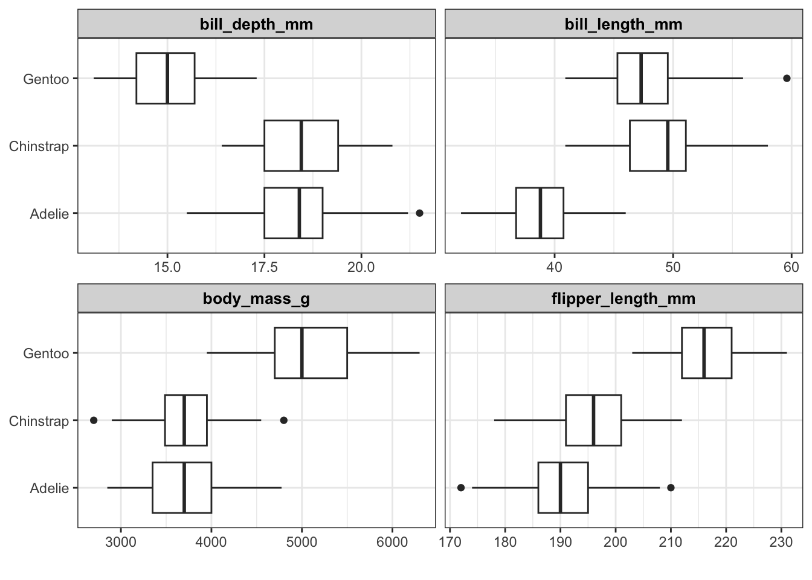
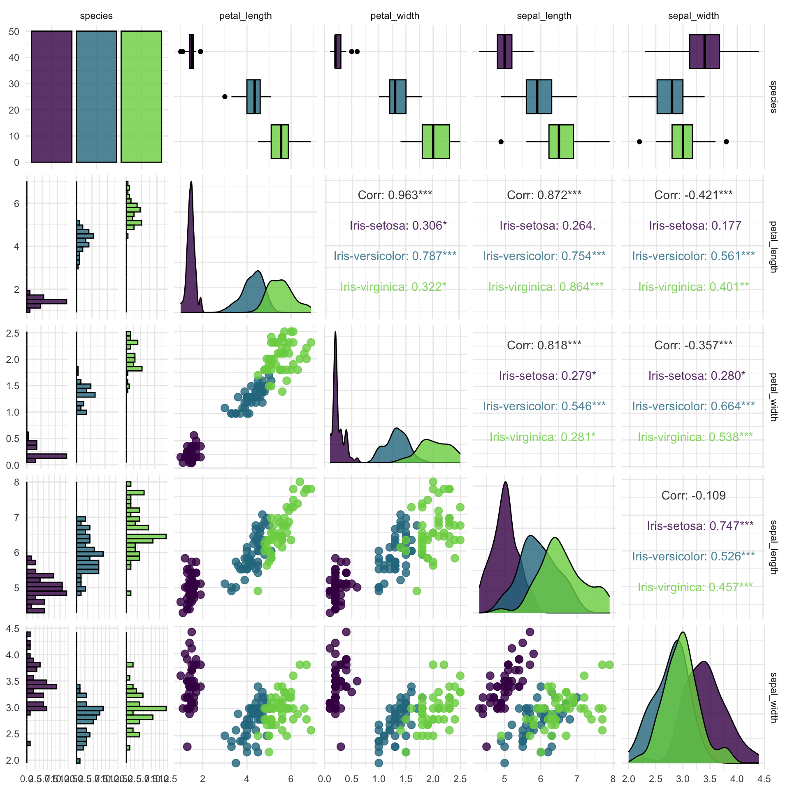

5 Introducción al análisis de datos
Antes de entrenar un modelo de aprendizaje automático, o incluso antes de realizar cualquier cálculo con un nuevo conjunto de datos, es muy importante realizar una exploración descriptiva de los mismos. Este proceso permite entender mejor qué información contiene cada variable, así como detectar posibles errores. Algunos ejemplos frecuentes son:
Que una columna se haya almacenado con el tipo incorrecto: una variable numérica está siendo reconocida como texto o viceversa.
Que una variable contenga valores que no tienen sentido: por ejemplo, para indicar que no se dispone del precio de una vivienda se introduce el valor 0 o un espacio en blanco.
Que en una variable de tipo numérico se haya introducido una palabra en lugar de un número.
Además, este análisis inicial puede dar pistas sobre qué variables son adecuadas como predictores en un modelo de aprendizaje (algo que profundizaremos en unidades posteriores).
En R existen multitud de paquetes que permiten el análisis exploratorio de datos, entre los que podemos destacar los presentados en la Unidad 3, pero en estos materiales vamos a hacer uso de tres paquetes que nos permiten una mejor comprensión del análisis exploratorio de datos gracias a sus funciones preconfiguradas.
5.1 Librerías para el AED
Los tres paquetes que vamos a utilizar son:
skimr(Waring et al. 2022), que está diseñado para proporcionar estadísticas resumidas sobre variables en marcos de datos, tibbles, tablas de datos y vectores. Su valores predeterminados proporcionan buenos resultados, pero resultan fácil de modificar si es necesario.DataExplorer(Cui 2020), que tiene como objetivo automatizar la mayor parte del manejo y la visualización de datos, para que los usuarios puedan concentrarse en estudiar los datos y extraer información.GGally(Schloerke et al. 2021), que extiendeggplot2` agregando varias funciones para reducir la complejidad de combinar geoms con datos transformados. Algunas de estas funciones incluyen una matriz de gráficos por pares, una matriz de gráficos de dispersión, un gráfico de coordenadas paralelas, un gráfico de supervivencia y varias funciones para trazar redes.
Antes de comenzar vamos a instalar los paquetes:
Cargamos ahora los paquetes y vemos la versión que estamos utilizando:
[1] '2.1.5'[1] '0.8.2'[1] '2.1.2'Cargamos también los paquetes básicos.
Ya estamos en disposición de poder usar estos paquetes para el análisis exploratorio de datos. Para ejemplificar su uso utilizaremos los bancos de datos Penguin e Iris que introdujimos en la Unidad 4. Más concretamente en los apartados 4.2.6 y 4.3.3.
Antes de mostrar el uso de los paquetes anteriores vamos a cargar los datos que utilizaremos:
Vamos a desechar las variables Id y year (por el momento) y generamos un nuevo marco de datos para no modificar el archivo original.
# indicamos las variables que debemos eliminar
borrar = c("Id","year")
# generamos el nuevo banco de datos eliminando esas variables
data_penguins = penguins |> select(-borrar)
# vemos los primeros casos
kable(head(data_penguins))| species | island | bill_length_mm | bill_depth_mm | flipper_length_mm | body_mass_g | sex |
|---|---|---|---|---|---|---|
| Adelie | Torgersen | 39.1 | 18.7 | 181 | 3750 | male |
| Adelie | Torgersen | 39.5 | 17.4 | 186 | 3800 | female |
| Adelie | Torgersen | 40.3 | 18.0 | 195 | 3250 | female |
| Adelie | Torgersen | NA | NA | NA | NA | NA |
| Adelie | Torgersen | 36.7 | 19.3 | 193 | 3450 | female |
| Adelie | Torgersen | 39.3 | 20.6 | 190 | 3650 | male |
Cargamos ahora el banco de datos iris:
Generamos el nuevo banco de datos:
# generamos el nuevo banco de datos
data_iris = iris
# vemos los primeros casos
kable(head(data_iris))| sepal_length | sepal_width | petal_length | petal_width | species |
|---|---|---|---|---|
| 5.1 | 3.5 | 1.4 | 0.2 | Iris-setosa |
| 4.9 | 3.0 | 1.4 | 0.2 | Iris-setosa |
| 4.7 | 3.2 | 1.3 | 0.2 | Iris-setosa |
| 4.6 | 3.1 | 1.5 | 0.2 | Iris-setosa |
| 5.0 | 3.6 | 1.4 | 0.2 | Iris-setosa |
| 5.4 | 3.9 | 1.7 | 0.4 | Iris-setosa |
5.1.1 Análisis exploratorio con skimr
La función central de skimr es skim(), que está diseñada para trabajar con data frames (agrupados). Al igual que summary(), que es la función por defecto para resúmenes numéricos que tenemos a nuestra disposición en R, la función skim() presenta un informe de resultados para cada columna del data frame; cuyas estadísticas dependen de la clase de cada una de las variables. Los resultados se estructuran según el tipo de variable.
5.1.1.1 Datos iris
Comenzamos con los datos iris, donde la variable de interés para nuestro modelo de aprendizaje automático es `Species`, con un análisis completo de todas las variables:
| Name | data_iris |
| Number of rows | 150 |
| Number of columns | 5 |
| _______________________ | |
| Column type frequency: | |
| factor | 1 |
| numeric | 4 |
| ________________________ | |
| Group variables | None |
Variable type: factor
| skim_variable | n_missing | complete_rate | ordered | n_unique | top_counts |
|---|---|---|---|---|---|
| species | 0 | 1 | FALSE | 3 | Iri: 50, Iri: 50, Iri: 50 |
Variable type: numeric
| skim_variable | n_missing | complete_rate | mean | sd | p0 | p25 | p50 | p75 | p100 | hist |
|---|---|---|---|---|---|---|---|---|---|---|
| sepal_length | 0 | 1 | 5.84 | 0.83 | 4.3 | 5.1 | 5.80 | 6.4 | 7.9 | ▆▇▇▅▂ |
| sepal_width | 0 | 1 | 3.05 | 0.43 | 2.0 | 2.8 | 3.00 | 3.3 | 4.4 | ▁▅▇▂▁ |
| petal_length | 0 | 1 | 3.76 | 1.76 | 1.0 | 1.6 | 4.35 | 5.1 | 6.9 | ▇▁▆▇▂ |
| petal_width | 0 | 1 | 1.20 | 0.76 | 0.1 | 0.3 | 1.30 | 1.8 | 2.5 | ▇▁▇▅▃ |
Los resultados se estructuran en tres tablas:
- En la primera tenemos información sobre el nombre y dimensiones del data frame, así como el número de variables numéricas y factores.
- En la segunda tabla tenemos la información sobre las variables de tipo factor:
skim_variable: nombre de la variable.n_missing: número de valores perdidos.complete_rate: ratio de valores completos (1 = sin valores perdidos).ordered: valor boleano para indicar si los niveles del factor están ordenados.n_unique: valores únicos de la variable.top_counts: frecuencia de cada uno de los valores de la variable.
- En la última tabla tenemos la información sobre las variables de tipo numéricas:
skim_variable: nombre de la variable.n_missing: número de valores perdidos.complete_rate: ratio de valores completos (1 = sin valores perdidos).mean: media de la variable.sd: desviación típica de la variable.p0: mínimo de la variable.p25: percentil 25 de la variable.p50: percentil 50 (mediana) de la variable.p75: percentil 75 de la variable.p100: máximo de la variable.hist: histograma de valores de la variable.
Los resultado obtenidos nos permiten tener una primera visión del comportamiento de cada una de las variables que componen el banco de datos. Sin embargo, dado que nuestro objetivo es conocer el poder de clasificación de cada una de las variables predictoras para establecer la clasificación de especies, parece lógico que orientemos nuestro análisis descriptivo preliminar en esta línea. Para ello podemos utilizar una modificación de la función anterior donde establecemos el análisis para cada predictora en función de la variable species.
| Name | dplyr::group_by(data_iris… |
| Number of rows | 150 |
| Number of columns | 5 |
| _______________________ | |
| Column type frequency: | |
| numeric | 4 |
| ________________________ | |
| Group variables | species |
Variable type: numeric
| skim_variable | species | n_missing | complete_rate | mean | sd | p0 | p25 | p50 | p75 | p100 | hist |
|---|---|---|---|---|---|---|---|---|---|---|---|
| sepal_length | Iris-setosa | 0 | 1 | 5.01 | 0.35 | 4.3 | 4.80 | 5.00 | 5.20 | 5.8 | ▃▃▇▅▁ |
| sepal_length | Iris-versicolor | 0 | 1 | 5.94 | 0.52 | 4.9 | 5.60 | 5.90 | 6.30 | 7.0 | ▂▇▆▃▃ |
| sepal_length | Iris-virginica | 0 | 1 | 6.59 | 0.64 | 4.9 | 6.23 | 6.50 | 6.90 | 7.9 | ▁▃▇▃▂ |
| sepal_width | Iris-setosa | 0 | 1 | 3.42 | 0.38 | 2.3 | 3.12 | 3.40 | 3.68 | 4.4 | ▁▅▇▃▂ |
| sepal_width | Iris-versicolor | 0 | 1 | 2.77 | 0.31 | 2.0 | 2.52 | 2.80 | 3.00 | 3.4 | ▁▅▆▇▂ |
| sepal_width | Iris-virginica | 0 | 1 | 2.97 | 0.32 | 2.2 | 2.80 | 3.00 | 3.18 | 3.8 | ▂▆▇▅▁ |
| petal_length | Iris-setosa | 0 | 1 | 1.46 | 0.17 | 1.0 | 1.40 | 1.50 | 1.58 | 1.9 | ▁▃▇▃▁ |
| petal_length | Iris-versicolor | 0 | 1 | 4.26 | 0.47 | 3.0 | 4.00 | 4.35 | 4.60 | 5.1 | ▂▂▇▇▆ |
| petal_length | Iris-virginica | 0 | 1 | 5.55 | 0.55 | 4.5 | 5.10 | 5.55 | 5.88 | 6.9 | ▃▇▇▃▂ |
| petal_width | Iris-setosa | 0 | 1 | 0.24 | 0.11 | 0.1 | 0.20 | 0.20 | 0.30 | 0.6 | ▇▂▂▁▁ |
| petal_width | Iris-versicolor | 0 | 1 | 1.33 | 0.20 | 1.0 | 1.20 | 1.30 | 1.50 | 1.8 | ▅▇▃▆▁ |
| petal_width | Iris-virginica | 0 | 1 | 2.03 | 0.27 | 1.4 | 1.80 | 2.00 | 2.30 | 2.5 | ▂▇▆▅▇ |
Ahora podemos comparar numéricamente el efecto de cada predictora en función de las diferentes especies de flor. Podemos ver que:
- Para
sepal_lengthla especie con mayor valor en media esvirginicacon bastante diferencia desetosa, que es la que tiene el valor más bajo. Algo similar ocurre con las variabilidades, en términos de desviaciones típicas. - Para
sepal_widthtodas las especies son muy parecidas (medias y desviaciones típicas similares). - Tanto para
petal_lengthypetal_widthse observan diferencias entre las especies, tanto en términos de los valores medios como de las variabilidades.Veamos ahora
Veamos ahora con el otro conjunto de datos.
5.1.1.2 Datos Penguins
Como en el caso anterior realizamos un análisis completo de todo el banco de datos. En este caso el target es una variable numérica por lo que no resulta posible distinguir los resultados por dicho valor, aunque en el conjunto de predictoras si tenemos variables de agrupación. Lo habitual en este tipo de situaciones es evaluar como aumenta o disminuye el valor del target en función de las posibles predictoras. En los puntos siguientes veremos como utilizar los otros dos paquetes para analizar esta situación.
| Name | data_penguins |
| Number of rows | 344 |
| Number of columns | 7 |
| _______________________ | |
| Column type frequency: | |
| factor | 3 |
| numeric | 4 |
| ________________________ | |
| Group variables | None |
Variable type: factor
| skim_variable | n_missing | complete_rate | ordered | n_unique | top_counts |
|---|---|---|---|---|---|
| species | 0 | 1.00 | FALSE | 3 | Ade: 152, Gen: 124, Chi: 68 |
| island | 0 | 1.00 | FALSE | 3 | Bis: 168, Dre: 124, Tor: 52 |
| sex | 11 | 0.97 | FALSE | 2 | mal: 168, fem: 165 |
Variable type: numeric
| skim_variable | n_missing | complete_rate | mean | sd | p0 | p25 | p50 | p75 | p100 | hist |
|---|---|---|---|---|---|---|---|---|---|---|
| bill_length_mm | 2 | 0.99 | 43.92 | 5.46 | 32.1 | 39.23 | 44.45 | 48.5 | 59.6 | ▃▇▇▆▁ |
| bill_depth_mm | 2 | 0.99 | 17.15 | 1.97 | 13.1 | 15.60 | 17.30 | 18.7 | 21.5 | ▅▅▇▇▂ |
| flipper_length_mm | 2 | 0.99 | 200.92 | 14.06 | 172.0 | 190.00 | 197.00 | 213.0 | 231.0 | ▂▇▃▅▂ |
| body_mass_g | 2 | 0.99 | 4201.75 | 801.95 | 2700.0 | 3550.00 | 4050.00 | 4750.0 | 6300.0 | ▃▇▆▃▂ |
Además de la interpretación de las frecuencias para las variables factores, y de las medias y desviaciones típicas de las numéricas, lo más relevante es la presencia de observaciones missing. Estas muestras pueden afectar a nuestros modelos de aprendizaje automático, así que además de identificar su existencia hay que decidir que hacer con ellas. Si su número es pequeño en comparación con el tamaño total (número de muestras) de la base de datos una opción es eliminar dichas muestras, pero generalmente lo más habitual es realizar un proceso de imputación (rellenar los valores perdidos con nuevos valores) como los que estudiaremos más adelante.
5.1.2 Análisis exploratorio con DataExplorer
Aunque el paquete skimr nos proporciona una primera aproximación numérica a nuestro banco de datos, también es cierto que no esta preparado para visualizar las posibles relaciones entre un target (numérico o factor) y las posibles variables predictoras. Vamos a ver como el paquete DataExplorer nos proporciona visualizaciones gráficas muy interesantes y fáciles de implementar. El paquete nos proporciona una primera toma de contacto con todo el conjunto de datos, de forma que podemos realizar un estudio más exhaustivo utilizando el paquete GGally que veremos en el punto siguiente.
Los gráficos que podemos obtener con este paquete son accesibles mediante las funciones:
plot_intro(), que nos proporciona la información general de base de datosDiscrete Columns: Porcentaje de variables de tipo factor.Continuous Columns: Porcentaje de variables de tipo numérico.All Missing Columns: Porcentaje de variables con todos sus valores missing.Complete Rows: Porcentaje de muestras sin valores missing.Missing Observations: Porcentaje de valores missing con respecto al total de datos recogidos.
plot_missing(), que nos proporciona la información del porcentaje de valores missing para cada una de las variables del banco de datos. también proporciona una escala de medida sobre la consideración del porcentaje de valores missing en cada una de las variables. Dicha escala se puede modificar con el parámetrogroup.plot_bar(), que proporciona gráficos de barras para cada una de las variables de tipo factor de forma individual. Podemos modificar dichos gráficos introduciendo el target de interés mediante los parámetroswith, cuando es de tipo numérico, obycuando es de tipo factor. En al práctica solo tiene sentido usar target factor para este tipo de gráficos.plot_histogramyplot_density, para representar la distribución de variables de tipo numérico. En este caso tenemos el parámetroscale_xque nos permite realizar de forma automática transformacionales sobre la variable de interés para estudiar su comportamiento, sobre todo para tratar de normalizar su comportamiento.plot_qq, para analizar si las variables numéricas se comportan según una distribución normal. En este caso tenemos disponible el parámetrobypara analizar la posible normalidad mediante la variable factor identificada con este parámetro.plot_boxplot(), para analizar el comportamiento de las variables numéricas con respecto a un factor identificado mediante el parámetroby. Al igual que en otras funciones resulta posible introducir transformacionales de las variables numéricas mediante el parámetroscale_y.plot_correlation, para obtener una mapa de intensidad con las correlaciones entre las variables del banco de datos. Es necesario especificartype = "c"para tener en cuenta únicamente las variables numéricas, y así poder interpretar de forma adecuada los valores obtenidos.plot_scatterplot(), para representar la nube de puntos entre todas las viables numéricas y la variable de interés. La variable de interés se identifica con el parámetroby, y para una mejor interpretación se deberían utilizar únicamente variables de tipo numérico. Este gráfico permite la introducción de cambios de escala en ambos ejes mediante los parámetrosscale_xyscale_y.
5.1.2.1 Datos Iris
Comenzamos el análisis de este banco de datos recordando que el target (`species`) es de tipo factor, lo que condiciona parte de nuestras visualizaciones. En primer lugar tenemos una visualización general del banco de datos:

Tenemos un 20% de variables de tipo factor y un 80% de tipo numérico. No tenemos ninguna variable con todos los valores missing. De hecho el 100% de las muestras están completas, es decir, sin valores perdidos. verificamos este hecho con el gráfico de valores missing:
Comenzamos ahora con los gráficos individuales de cada variable donde podremos analizar su distribución. Comenzamos con las de tipo factor:
Podemos ver que todos los niveles del factor tienen el mismo numero de observaciones, es lo que llamamos un diseño equilibrado, pero echamos en falta que no aparezcan los valores observados sobre cada una de las barras. Continuamos con el análisis de las variables numéricas. En este caso utilizamos el histograma para representar su comportamiento. para configurar adecuadamente el gráfico introducimos un elemento lista donde indicamos el tamaño y color de las etiquetas de los gráficos, y donde borramos las etiquetas de los ejes x e y.
# lista de configuraciones gráficas
lista = list(plot.title = element_text(size = 16, face = "bold"),
strip.text = element_text(colour = "black", size = 10, face = 2),
axis.title.x = element_blank(),
axis.title.y = element_blank())
# gráfico
# fijamos ncol = 2 para que aparezcan dos gráficos por fila
plot_histogram(data_iris,
ncol=2,
ggtheme = theme_bw(),
theme_config = lista) Apreciamos claramente comportamientos bastante extraños en algunas de las variables. Por ejemplo, en petal_length podemos ver como dos poblaciones diferenciadas para valores inferior y superior a 2. Desde luego en ninguna de las variables se aprecia una distribución Normal en su comportamiento.
Veamos que ocurre cuando queremos estudiar el comportamiento de cada predictora con respecto al target.
# gráfico
# fijamos ncol = 2 para que aparezcan dos gráficos por fila
plot_boxplot(data_iris, by = "species",
ncol=2,
ggtheme = theme_bw(),
theme_config = lista) Claramente se aprecia que los diferentes tipos de flor se diferencian en sus medidas de pétalo (length y width), pero no existen tantas diferencias entre las medidas de sépalo. Dado que nuestro objetivo es la clasificación parece que las medidas de pétalos ayudarán mejor a clasificar entre las tres especies de Iris.
Por último podemos estudiar el nivel de asociación entre las predictoras numéricas mediante el gráfico de correlaciones. En este caso hay que tener en cuenta que si la relación entre numéricas no es lineal la interpretación de los valores obtenidos puede resultar errónea.
Se producen correlaciones positivas muy altas entre las medidas de pétalo, indicando que cuanto mayor es una de ellas la otra también aumenta sus valores, es decir tenemos una relación directa entre ellas. La variable sepal_width tiene correlaciones negativas con el resto indicando que cuando las otras aumentan esta última disminuye, es decir, tenemos una relación inversa entre ellas.
5.1.2.2 Datos Penguins
En este caso nuestro target es una variable numérica y debemos tener en cuenta esto a la hora de definir nuestro gráficos de asociación. Comenzamos con los gráficos general del banco de datos y los individuales de cada variable.
En este caso tenemos un 0.79% de valores missing en nuestro banco de datos. tratamos de identificar donde se encuentran dichos valores evaluando cada variable por separado.

Tenemos valores missing en todas las variables numéricas y en el factor sexo, siendo está última la que presenta un porcentaje mayor (3.2%). Ninguno de los porcentajes es muy relevante, y un proceso de imputación podría proporcionar una buena solución para nuestros modelos de aprendizaje automático.
Analizamos ahora según el tipo de variable comenzando con lo factores:
Podemos destacar que la especie más numerosa es Adelie, mientras que la menos es Chinistrap. Por otro lado, la isla de la que tenemos más información es Biscoe, y tenemos un diseño bastante equilibrado por sexo.
Veamos ahora las variables numéricas:
En la target de este banco de datos (flipper_length_mm) se aprecian como dos poblaciones distintas separadas por un valor algo superior a los 200 mm. En todas las distribuciones se aprecia cierto sesgo hacia un lado (las distribuciones no están centradas) por lo que podríamos probar alguna transformación para tratar de corregir en parte dicho comportamiento. Dejamos esta tarea para más adelante.
Veamos el gráfico de densidades para visualizar de forma más clara los posibles sesgos:
Comenzamos ahora con los estudios de asociación. en primer lugar analizamos el comportamiento de cada uno de los factores con respecto a la característica de interés.
# gráfico
# fijamos ncol = 2 para que aparezcan dos gráficos por fila
plot_boxplot(data_penguins, by = "species",
ncol=2,
ggtheme = theme_bw(),
theme_config = lista) Warning: Removed 8 rows containing non-finite values (`stat_boxplot()`).
La solución proporciona todos los gráficos para las variables numéricas, pero nos vamos a fijar en el de la variable target. Podemos ver que la especie Gentoo es la que muestra mayores valores de target, mostrando además diferencias con las otras dos especies. Veamos que ocurre con el sexo y la isla.
# gráfico
# fijamos ncol = 2 para que aparezcan dos gráficos por fila
plot_boxplot(data_penguins, by = "sex",
ncol=2,
ggtheme = theme_bw(),
theme_config = lista) Warning: Removed 8 rows containing non-finite values (`stat_boxplot()`).
No se aprecian diferencias por sexo aunque los machos muestran una valor medio más alto.
# gráfico
# fijamos ncol = 2 para que aparezcan dos gráficos por fila
plot_boxplot(data_penguins, by = "island",
ncol=2,
ggtheme = theme_bw(),
theme_config = lista) Warning: Removed 8 rows containing non-finite values (`stat_boxplot()`).En este caso las islas Torgensen y Dream muestran valores más pequeños del target que las muestras de la isla Biscoe.
Por último vemos los gráficos de dispersión de las variables numéricas con respecto al target.
# gráfico
# fijamos ncol = 2 para que aparezcan dos gráficos por fila
plot_scatterplot(data = data_penguins |> select_if(is.numeric),
by = "flipper_length_mm",
ncol=2,
ggtheme = theme_bw(),
theme_config = lista) Warning: Removed 6 rows containing missing values (`geom_point()`).En la Figura 5.15 podemos destacar tres aspectos:
- No se aprecia una relación entre
bill_depthyflipper_lengthdado que incluso se ven dos nubes de puntos separadas. Parece que existe algún tipo de factor que provoca esa diferencia. - Entre
bill_lengthyflipper_lengthse aprecia cierta dependencia, ya que conforme aumenta la primera parece que aumenta la segunda. Sin embargo, la nube de puntos es bastante dispersa dando a entender que el nivel de asociación no es muy alto. - Por último, entre
body_massyflipper_lengthse aprecia una tendencia bastante lineal, indicando que ambas están muy relacionadas, de forma que si estamos interesados en predecir un valor deflipper_lengthparece factible utilizar el valor debody_mass.
Podemos ver como todas las posibles predictoras no tienen la misma relevancia o relación con el target a lo hora de tratar de predecir su comportamiento. Para analizar el grado de asociación podemos hacer el mapa de intensidad de correlación. Dado que tenemos valores missing en nuestras variables debemos indicar a la función que utiliza para los cálculos aquellas muestras sin valores missing en ninguna de las variables numéricas.
# gráfico
plot_correlation(data_penguins,
type = "c",
cor_args = list("use" = "pairwise.complete.obs"),
ggtheme = theme_bw()) En los resultados de Figura 5.16 se aprecia el grado de asociación entre las predictoras y el target (segunda fila de la matriz), tal y como hemos comentado anteriormente. De hecho, para bill_depth proporciona un valor negativo que en este caso solamente indica que no hay asociación lineal entre ellas debido a la separación de las dos nubes de puntos que veíamos en la Figura 5.15.
5.1.3 Análisis exploratorio con GGally
Para finalizar este apartado se presentan algunas de las funciones contenidas en el paquete GGally. Para conocer todas las funciones disponibles se recomienda consultar este enlace.
En concreto nos vamos a centrar en todas las funciones que nos permiten extraer información del comportamiento del target de nuestro datos frente al conjunto de predictoras. Dichas funciones son:
ggbivariate(), que nos permite representar la información de un target con respecto a un conjunto de predictoras (numéricas o factores). El gráfico de asociación que aparece depende del tipo del target (numérica o factor) y del tipo de cada una de las predictoras.ggpairs(), que representa de forma bivariada toda la información contenida en una matriz de datos en función del tipo de cada una de las variables allí contenidas.ggscatmat(), que representa de forma bivariada toda la información contenida en una matriz de datos donde todas las variables son de tipo numérico.ggduo(), que generaliza los pairs plot representando la información de dos conjuntos de datos distintos. En este caso podemos poner en uno de los grupos el target deseado y en otro grupo todas las posibles predictoras.
A continuación, vemos diferentes versiones de estos gráficos para los conjuntos de datos que hemos venido trabajando hasta ahora.
5.1.3.1 Datos Iris
Dado que todas las predictoras son numéricas el gráfico por defecto es un gráfico de cajas donde podemos comparar el comportamiento de cada especie con respecto a cada una de las variables numéricas.
La Figura 5.17 nos permite ver la contribución individual de cada predictora al problema de clasificación de las tres especies, pero no resulta de utilidad para ver como dos de ellas nos pueden ayudar en dicha tarea. Introducimos ahora un gráfico que nos permite ver la contribución dos a dos de las predictoras en nuestro problema de clasificación:
Esta figura nos proporciona tres análisis distintos:
En la diagonal aparecen los gráficos de densidad individuales de cada predictora en las tres especies. Este gráfico es similar al anterior del gráfico de cajas pero permite una mejor visualización para diferencia entre especies. Por ejemplo, podemos distinguir entre
iris-setosay las otras dos especies tanto parapetal_lengthypetal_width.En la parte superior aparecen los coeficientes de correlación entre las predictoras para cada una de las especies. Si tomamos
petal_widthpodemos ver que las correlaciones más latas se producen siempre con lasiris-versicolory las más bajas con lairis-setosa.En la parte inferior se presentan las nubes de puntos bivaraintes identificando cada punto de acuerdo a la especie a la que pertenecen. Desde le punto de vista de clasificación las especies se identificarán más fácilmente cuando las nubes de puntos estén más separadas. Por ejemplo, si tomamos
petal_lengthypetal_widthse aprecia claramente al separación entreiris-setosay las otras dos especies. De hecho podemos ver que también hay cierta separación para las otras dos especies (iris-versicolorcon valores más bajos) pero no tan claramente. Esto implica directamente que será más fácil clasificar lasiris-setosa, y que habrá cierta confusión en la clasificación para las otras dos cuando utilizamos las variables de pétalo.
5.1.3.2 Datos Penguins
Los gráficos y su interpretación varían un poco con respecto al ejemplo anterior ya que nuestro target en este caso es una variable de tipo numérico. Comenzamos como antes con los gráficos individuales para cada variable.
Dado que nuestro target es continuo los gráficos disponibles son diagramas de cajas cuando la predictora es factor, y diagramas de dispersión (con tendencia lineal aproximada) para las numéricas.
Por ejemplo, podemos ver que la especie Gentoo tiene los valores de la predictora más grandes y diferenciados respecto de las otras dos especies. Para la variable body_mass podemos ver una tendencia lineal creciente indicando que cuanto más aumenta dicha variable mayor será el valor de target. Estos gráficos son similares a los que obtuvimos con el paquete DataExplorer.
Como en el caso anterior podemos obtener los gráficos del target con respecto a dos predictoras de forma conjunta para analizar como varían los valores del target. Seleccionamos las predictoras numéricas y añadimos colores de función de cada una de las predictoras factor para estudiar su comportamiento conjunto. Visualizamos también la tendencia lineal entre target y predictora numérica diferenciado por el factor para analizar su comportamiento.
ggduo(
data_penguins,
# target
"flipper_length_mm",
# predictoras numéricas
names(data_penguins |> select_if(is.numeric))[-3],
# Coloreamos por factor y visualizamos tendencia lineal
mapping = ggplot2::aes(color = species),
types = list(continuous = wrap("smooth_lm", se=FALSE)),
legend = 1
)¿Qué conclusiones podemos extraer de este gráfico? ¿qué ocurre si asumimos una tendencia no lineal?
ggduo(
data_penguins,
# target
"flipper_length_mm",
# predictoras numéricas
names(data_penguins |> select_if(is.numeric))[-3],
# Coloreamos por factor y visualizamos tendencia lineal
mapping = ggplot2::aes(color = species),
types = list(continuous = wrap("smooth_loess", se=FALSE)),
legend = 1
)¿Cambian muchos nuestras conclusiones?
Veamos ahora que ocurre con la isla (probamos únicamente la tendencia no lineal).
ggduo(
data_penguins,
# target
"flipper_length_mm",
# predictoras numéricas
names(data_penguins |> select_if(is.numeric))[-3],
# Coloreamos por factor y visualizamos tendencia lineal
mapping = ggplot2::aes(color = island),
types = list(continuous = wrap("smooth_loess", se=FALSE)),
legend = 1
)¿Qué conclusiones podemos extraer en este caso teniendo en cuenta que nuestro objetivo es predecir flipper_length?
La cantidad de gráficos que podemos realizar en nuestro bancos de datos es inmensa y depende como hemos visto del tipo de target y predictoras. Cada vez que introducimos un nuevo banco de datos debemos realizar el análisis descriptivo correspondiente para tener una mejor compresión del comportamiento de nuestros datos.
En el punto siguiente empezamos a introducir el paquete que utilizaremos para nuestros modelos de aprendizaje automático. Por el momento presentaremos dos modelos de aprendizaje básicos para los bancos de datos utilizados, y más adelante iremos detallando los aspectos técnicos de cada uno de los modelos que estudiaremos durante este curso.
5.2 Librerías para el AA
Dentro del programa R existen diferentes paquetes para trabajar con modelos de aprendizaje automático, como por ejemplo Caret y H20, pero en estos materiales nos vamos a centrar en el paquete mlr3 ya que emplea programación orientada a objetos mediante el uso de la clase R6.
5.2.1 Ecosistema mlr3
El paquete mlr3 (Lang et al. 2019) y el ecosistema mlr3 más amplio proporcionan un marco genérico, orientado a objetos y extensible para la regresión, la clasificación y otras tareas de aprendizaje automático para la Lenguaje R. En el nivel más básico, la interfaz unificada proporciona funcionalidad para entrenar, probar y evaluar muchos algoritmos de aprendizaje automático. También puede llevar esto un paso más allá con la optimización de hiperparámetros, canalizaciones computacionales, interpretación de modelos y mucho más. mlr3 tiene objetivos generales similares a caret y tidymodels para R, scikit-learn para Python y MLJ para Julia. En general, mlr3 está diseñado para proporcionar más flexibilidad que otros marcos de AA y, al mismo tiempo, ofrecer formas sencillas de usar la funcionalidad avanzada. Si bien tidymodels en particular hace que sea muy fácil realizar tareas simples de AA, mlr3 está más orientado a AA avanzado.
El primer paso es instalar y hacer accesible el paquete mlr3verse (Lang and Schratz 2023) que nos permite acceder al entorno básico de mlr3. Este paquete está destinado a simplificar tanto la instalación como la carga de paquetes del ecosistema mlr3. En lugar de depender de los paquetes de extensión, las funciones requeridas para el análisis de datos se reexportan, lo que brinda una visión general de la funcionalidad más importante del ecosistema mlr3. A continuación aparece el código para su instalación:
Podemos utilizarlo ahora cargando el paquete correspondiente:
Al cargar el paquete mlr3verse,se cargan los modelos básicos de aprendizaje automático para problemas de regresión, clasificación, cluster y supervivencia. Las funciones y objetos de Los importados por este metapaquete son:
- mlr3, que es el paquete principal con las funcionalidades necesarias para crear los objetos necesarios para el ecosistema mlr3.
- mlr3cluster, que es el paquete diseñado para los modelos de aprendizaje no supervisado de agrupación.
- mlr3data, que contiene bancos de datos adicionales.
- mlr3filters, que es el paquete utilizado para la selección de predictores.
- mlr3fselect, que es el paquete para la selección de funciones basada en contenedores. - mlr3learners, que es el paquete de definición de los modelos básicos de aprendizaje automático.
- mlr3pipelines, que es el paquete para realizar el preprocesado de los datos y modelado en un único objeto.
- mlr3tuning, que el paquete utilizado para probar diferentes configuraciones de los modelos de aprendizaje automático.
- mlr3tuningspaces, que contiene una colección de espacios de búsqueda para la optimización de hiperparámetros en el ecosistema mlr3.
- mlr3viz, que el paquete utilizado para visualizar los objetos mlr3.
- paradox, que es el paquete para crear y manejar el valor de los hiperparámetros de los modelos.
Podemos ver todos los paquetes (junto con su versión) integrados mediante el código siguiente:
package version
1: bbotk 0.7.2
2: mlr3cluster 0.1.8
3: mlr3data 0.7.0
4: mlr3filters 0.7.1
5: mlr3fselect 0.11.0
6: mlr3hyperband 0.4.5
7: mlr3learners 0.5.6
8: mlr3mbo 0.2.1
9: mlr3misc 0.13.0
10: mlr3pipelines 0.5.0.1
11: mlr3tuning 0.19.0
12: mlr3tuningspaces 0.4.0
13: mlr3viz 0.6.1.9000
14: paradox 0.11.1Sin embargo, el ecosistema mlr3 contiene muchos otros paquetes que podemos ver en la imagen siguiente:

Algunos de estos paquetes necesitan su propia instalación por lo que se debe consultar la página web de cada uno de ellos para realizar dicha tarea. A lo largo de los materiales se indicara como instalar y utilizar todos aquellos que no están dentro del paquete básico.
5.2.2 Crear un modelo con mlr3
Encontrar el mejor modelo de aprendizaje automático capaz de representar los patrones presentes en los datos de entrenamiento y generalizarlos a nuevas observaciones no es fácil, dado que existen multitud de algoritmos para una misma tarea, cada uno con unas características propias y con distintos parámetros que deben ser ajustados. Es a lo largo de todo este proceso donde más destacan las funcionalidades ofrecidas por mlr3, permitiendo emplear la misma sintaxis para ajustar, optimizar, evaluar y predecir un amplio abanico de modelos variando únicamente el nombre del algoritmo. Aunque mlr3 permite todo esto con apenas unas pocas líneas de código, son muchos los argumentos que pueden ser adaptados, cada uno con múltiples posibilidades. De momento en esta unidad mostraremos las funcionalidades básicas para los bancos de datos que hemos venido presentando.
Los desarrolladores de mlr3 han dividido las etapas de la creación de un modelo de machine learning en 6 “bloques”. Dentro cada uno de estos “bloques” se llevan a cabo una o varias acciones (preprocesado, resampling, entrenamiento, evaluación, predicción, etc). Al trabajar de esta forma, se consigue que cada “bloque” transmita al siguiente, no solo los datos, sino también toda la información de lo ha ocurrido hasta el momento. La secuencia de pasos con los que se crea un modelo predictivo en mlr3 puede parecer extraña para aquellos lectores que estén acostumbrados a otros paquetes de aprendizaje automático. En mlr3, sin embargo, primero se crean los objetos en los que se definen cada una las acciones para finalmente ejecutarlas de forma conjunta e interconectada. A continuación se detallan cada uno de los pasos a seguir para construir un modelo predictivo.
5.2.2.1 Task
El objeto task o tarea contiene datos (generalmente tabulares) y metadatos adicionales para definir un problema de aprendizaje automático. Los metadatos son, por ejemplo, el nombre de la variable de destino para problemas de aprendizaje automático supervisado, o el tipo de conjunto de datos (por ejemplo, una tarea espacial o de supervivencia). Esta información es utilizada por operaciones específicas que se pueden realizar en una tarea. Podemos crear un task a partir de un data.frame(), data.table(), o Matrix().
Una vez creado el objeto podemos realizar todo el preprocesado necesario para pasar al paso siguiente. Los tipos task disponibles son:
Task de clasificación: el objetivo es una etiqueta (almacenada como carácter o factor) con solo relativamente pocos valores distintos.
Task de regresión: el objetivo es una cantidad numérica (almacenada como número entero o numérico) .
Task de supervivencia: el objetivo es el tiempo (censurado por la derecha) hasta un evento. Actualmente se están desarrollando más tipos de censura. Para utilizar esta task debemos instalar el paquete
mlr3proba. El código siguiente nos permite esto:
Task de densidad: una tarea no supervisada para estimar la densidad . Se encuentra disponible también en el paquete
mlr3proba.Task de clúster o agrupación: un tipo de tarea no supervisada; no hay un target y el objetivo es identificar grupos similares en términos de distancia. En este caso utilizamos el paquete
mlr3cluster.Task espacio-temporal: las observaciones en la tarea tienen información espacio-temporal (por ejemplo, coordenadas). En este caso es necesario instalar el paquete
mlr3spatiotempcv. El código siguiente nos permite esto:
Un aspecto a tener en cuenta una vez hemos creado una task es la representación gráfica de la información contenida en ella. Se trata de una análisis exploratorio gráfico del target, de cada predictoras vs el target, y el gráfico conjunto de predictoras vs target. Las soluciones obtenidas son similares a los de las librerías gráficas presentadas en la Sección 5.1. para realizar estos análisis debemos cargar en primer lugar la librería mlr3viz. para conseguir las tres soluciones gráficas para una task debemos utilizar la función autoplot() con los parámetros siguientes:
autoplot(task, type = "target"), para el gráfico individual de target.autoplot(task, type = "duo"), para el gráfico individual de cada predictora vs target.autoplot(task, type = "pairs"), para el gráfico conjunto bivariante de target y predictoras.
A continuación, vemos el código necesario para crear las task correspondientes a los banco de datos iris y penguins, y representamos gráficamente la información contenida en ellos.
Datos Iris
En este caso estamos en un problema de clasificación y vamos a utilizar la función as_task_classif para definir la task de clasificación a partir del dataframe de datos iris. El código necesario se presenta a continuación:
# creamos la tarea
task_iris = as_task_classif(data_iris, target = "species")
# información de la tarea
print(task_iris)<TaskClassif:data_iris> (150 x 5)
* Target: species
* Properties: multiclass
* Features (4):
- dbl (4): petal_length, petal_width, sepal_length, sepal_widthLa información proporcionada nos indica el target, si tenemos un problema de clasificación binario o multiclase, y el tipo de predictoras contenidas.
En un problema de clasificación binario otro parámetro de interés de la función as_task_classif() es positive con el que podemos indicar que nivel del factor es el identificado como “exitus”. Por ejemplo, en un problema donde el target es si se tiene o no se tiene cierta enfermedad podríamos identificar como positive="Si" al grupo de interés.
Además, mlr3 incorpora toda una serie de atributos y métodos con los que extraer o modificar información de un objeto task:
$col_info, que proporciona información de todas las variables.$col_roles, que proporciona los tipos de todas las variables.$missings(), que proporciona los valores perdidos por variable.$levels(), que proporciona los niveles de cada variable de tipo factor.$select(), que nos permite seleccionar un conjunto de variables.filter$(), que nos permite seleccionar un conjunto de muestras.
Hay que tener en cuenta que al utilizar los atributos $select(), y filter$() estamos modificamos la task definida.
Al utilizar los atributos $select(), y filter$() estamos modificamos la task definida. Más adelante veremos como realizar una copia para modificarla sin alterar la task original.
Veamos el código para usar los atributos principales:
id type levels label
1: ..row_id integer <NA>
2: petal_length numeric <NA>
3: petal_width numeric <NA>
4: sepal_length numeric <NA>
5: sepal_width numeric <NA>
6: species factor Iris-setosa,Iris-versicolor,Iris-virginica <NA>
fix_factor_levels
1: FALSE
2: FALSE
3: FALSE
4: FALSE
5: FALSE
6: FALSE$feature
[1] "petal_length" "petal_width" "sepal_length" "sepal_width"
$target
[1] "species"
$name
character(0)
$order
character(0)
$stratum
character(0)
$group
character(0)
$weight
character(0) species petal_length petal_width sepal_length sepal_width
0 0 0 0 0 $species
[1] "Iris-setosa" "Iris-versicolor" "Iris-virginica" Un rol muy importante dentro de los problemas de clasificación es el de los pesos de las categorías que deseamos clasificar. Las ponderaciones se utilizan para ponderar los puntos de datos de manera diferente y que estos sean tenidos en cuenta en la predicción del modelo de aprendizaje. Un ejemplo de por qué haríamos esto es en tareas de clasificación donde las clases están desequilibradas. Aunque en este ejemplo todas las clases están equilibradas vamos a ver como realizaríamos este proceso en otros ejemplos:
En este caso tenemos una relación 1-1-1 entre las especies, es decir, hay los mismos elementos de las tres especies.
Si por ejemplo tuviéramos dos clases donde en una hay el doble de observaciones que la otra nuestra estructura de pesos debería ser 1-2, asignando el 2 a la clase que tiene la mitad de observaciones que la otra. De esta forma equilibramos los datos en la construcción de nuestro modelo de aprendizaje automático.
Veamos ahora las diferentes opciones gráficas para esta tarea. Comenzamos con el gráfico del target:
Obtenemos un gráfico de barras con los conteos de cada una de las clases del target. Esto nos permite saber si dichas clases están equilibradas o no.
En este caso obtenemos un gráfico de cajas para cada variable de tipo numérico respecto del factor respuesta donde podemos ver como se diferencian las clases para cada una de las predictoras. Por último vemos el gráfico conjunto de todas las predictoras y la respuesta.

La solución en este caso nos aporta gráficos diferentes en función de tipo de las variables involucradas en cada combinación. Tenemos desde histogramas o gráficos de densidad para el análisis individual de las variables numéricas, diagramas de barras para el análisis individual de factores, gráficos de dispersión y análisis de correlación para representar a información de dos variables numéricas, y diagramas de caja para una variable numérica y otra categórica. En este caso todos los gráficos identifican el target en sus soluciones mediante una escala de colores.
Datos Penguins
En este caso estamos en un problema de regresión y vamos a utilizar la función as_task_regr. Sin embargo, dado que como comprobaremos más tarde dicho conjunto contiene valores perdidos en la respuesta realizamos un proceso de limpieza inicial. En concreto se platean dos tareas que no se encuentran de lo que habitualmente se conoce como preprocesado:
- Detección de muestras con todos los valores perdidos.
- Detección de muestras con valores perdidos en la respuesta o target.
En ambos casos la solución pasa por eliminar dichas muestras. En el primer caso no tenemos ningún dato y por tanto no tiene sentido utilizar esa muestra. En el segundo eliminamos la muestra porque no podemos imputar valores en la respuesta para evitar posibles sesgos en el modelo. Para este proceso utilizamos funciones habituales para el tratamiento de dataframes, y una vez eliminadas dichas muestras procedemos con la creación del task correspondiente.
Comenzamos detectando todas las muestras donde todos sus valores son missing. Utilizamos la función complete.cases
# valoramos si las muestras tiene todas sus observaciones pérdidas
ids = complete.cases(data_penguins)
# identificamos dichas muestras
pos = which(ids=="FALSE")
pos [1] 4 9 10 11 12 48 179 219 257 269 272Ahora nos hemos asegurado que no hay muestras con todos los valores perdidos. Veamos si todavía quedan valores perdidos en la respuesta.
[1] 0No quedan valores perdidos y podemos construir la task correspondiente.
# creamos la tarea
task_penguins = as_task_regr(data_penguins, target = "flipper_length_mm")
# información de la tarea
print(task_penguins)<TaskRegr:data_penguins> (333 x 7)
* Target: flipper_length_mm
* Properties: -
* Features (6):
- dbl (3): bill_depth_mm, bill_length_mm, body_mass_g
- fct (3): island, sex, species id type levels label fix_factor_levels
1: ..row_id integer <NA> FALSE
2: bill_depth_mm numeric <NA> FALSE
3: bill_length_mm numeric <NA> FALSE
4: body_mass_g numeric <NA> FALSE
5: flipper_length_mm numeric <NA> FALSE
6: island factor Biscoe,Dream,Torgersen <NA> FALSE
7: sex factor female,male <NA> FALSE
8: species factor Adelie,Chinstrap,Gentoo <NA> FALSE$feature
[1] "bill_depth_mm" "bill_length_mm" "body_mass_g" "island"
[5] "sex" "species"
$target
[1] "flipper_length_mm"
$name
character(0)
$order
character(0)
$stratum
character(0)
$group
character(0)
$weight
character(0)flipper_length_mm bill_depth_mm bill_length_mm body_mass_g
0 0 0 0
island sex species
0 0 0 $island
[1] "Biscoe" "Dream" "Torgersen"
$sex
[1] "female" "male"
$species
[1] "Adelie" "Chinstrap" "Gentoo" Veamos ahora las soluciones gráficas para esta task. Para targets de tipo numérico la opción "duo" no se encuentra disponible. Comenzamos por representar la información del target:
En este caso dado que el target es numérico obtenemos el gráfico de cajas que no da información sobre su distribución.
¿Cómo interpretamos estos gráficos? ¿cómo nos pueden ayudar estos gráficos en nuestra tarea de predicción?
5.2.2.2 Division de muestras
Como ya vimos anteriormente evaluar la capacidad predictiva de un modelo consiste en comprobar cómo de próximas son sus predicciones a los verdaderos valores de la variable respuesta. Para poder cuantificarlo de forma correcta necesitamos dividir nuestro conjunto de muestras en train y test. Con las muestras train entrenamos el modelo, mientras que con las muestras de test evaluamos la capacidad predictiva del modelo con observaciones que no han participado en la obtención del modelo.
El tamaño adecuado de las particiones depende en gran medida de la cantidad de datos disponibles y la seguridad que se necesite en la estimación del error, 80%-20% suele dar buenos resultados. El reparto debe hacerse de forma aleatoria o aleatoria-estratificada.
Para asegurar la estratificación y evitar posibles sesgo en el modelo, la muestra de test debe compartir características similares a la muestra de entrenamiento. En mlr3, y siempre que el target sea categórico, esto se puede hacer modificando el task indicando que tenemos una variable como stratum. El código para la task_iris sería el siguiente:
task_iris$col_roles$stratum <- "species"
El paquete mlr3 dispone del objeto resampling = rsmp(), con las parámetros "holdout" y ratio = p, para repartir en los conjuntos train (p%) y test ((1-p)%) los datos contenidos en un task. Una vez creado el objeto de muestreo los atributos train_set() y test_set() nos permiten acceder a los índices de las observaciones que corresponden a cada bloque. Para asegurar la reproducibilidad de nuestros modelos es necesario fijar la semilla de números aleatorios. Cuando se emplea un resampling, si existe una o varias columnas con el role stratum, se realiza un reparto estratificado, garantizando así una distribución aproximada (por el momento, esto solo es válido para variables cualitativas). El reparto estratificado es muy importante cuando hay grupos minoritarios en alguna variable. Por ejemplo, en un set de datos con 100 observaciones, un predictor binario que tenga 90 observaciones de un grupo y solo 10 de otro, tiene un alto riesgo de que, en alguna de las particiones, el grupo minoritario no tenga representantes. Si esto ocurre en el conjunto de entrenamiento, algunos algoritmos darán error al aplicarlos al conjunto de test, ya que no entenderán el valor que se les está pasando. Este problema puede evitarse eliminando variables con varianza próxima a cero.
El código siguiente nos permite establecer de forma genérica el proceso de división de muestras mediante la identificación de las observaciones que asignaremos a la muestra de entrenamiento y test:
# Fijamos semilla
set.seed(1234)
# Creamos el objeto para la separación de muestras
rsmp_holdout <- rsmp("holdout", ratio = 0.8)
rsmp_holdout
# Estratificación para una task dada
task_datos$col_roles$stratum <- "variable"
# Incicializamos el objeto de división
rsmp_holdout$instantiate(task = task_datos)
# Obtenemos índices de muestras
# Índices train
id_train <- rsmp_holdout$train_set(i = 1)
# Índices test
id_test <- rsmp_holdout$test_set(i = 1)
# Se crean dos nuevas task, una con los datos de train y otra con los de test.
# Dado que se va a aplicar un filtrado, y para no alterar task_datos, se emplea
# antes del filtro el método $clone() para hacer una copia.
task_train <- task_datos$clone()$filter(id_train)
task_test <- task_datos$clone()$filter(id_test)Datos Iris
Vamos a obtener la muestra de entrenamiento y test para la task iris:
# Fijamos semilla
set.seed(1234)
# Objeto de muestreo
rsmp_holdout <- rsmp("holdout", ratio = 0.8)
# Estratificación
task_iris$col_roles$stratum <- "species"
# inicialización
rsmp_holdout$instantiate(task = task_iris)
# Índices de muestras
id_train <- rsmp_holdout$train_set(i = 1)
id_test <- rsmp_holdout$test_set(i = 1)
# Muestras
task_iris_train <- task_iris$clone()$filter(id_train)
task_iris_test <- task_iris$clone()$filter(id_test)Dado que todas las predictoras son numéricas nos resulta muy fácil verificar si las muestras de entrenamiento y test son similares sin más que comparar las medianas de las predictoras para el target en cada uno de los grupos.
kable(task_iris_train$data() |> group_by(species) |> summarise_if(is.numeric, median, na.rm = TRUE))| species | petal_length | petal_width | sepal_length | sepal_width |
|---|---|---|---|---|
| Iris-setosa | 1.50 | 0.2 | 5.00 | 3.4 |
| Iris-versicolor | 4.35 | 1.3 | 5.95 | 2.8 |
| Iris-virginica | 5.55 | 2.0 | 6.70 | 3.0 |
| species | petal_length | petal_width | sepal_length | sepal_width |
|---|---|---|---|---|
| Iris-setosa | 1.45 | 0.2 | 5.05 | 3.45 |
| Iris-versicolor | 4.30 | 1.3 | 5.75 | 2.75 |
| Iris-virginica | 5.45 | 2.1 | 6.35 | 2.80 |
Se puede ver que las medianas para los dos grupos son muy similares indicando que la separación de muestras no parece incurrir en ningún sesgo de partida.
Datos Penguins
Vamos a obtener la muestra de entrenamiento y test para la task penguins:
# Fijamos semilla
set.seed(1234)
# Objeto de muestreo
rsmp_holdout <- rsmp("holdout", ratio = 0.8)
# inicialización
rsmp_holdout$instantiate(task = task_penguins)
# Índices de muestras
id_train <- rsmp_holdout$train_set(i = 1)
id_test <- rsmp_holdout$test_set(i = 1)
# Muestras
task_penguins_train <- task_penguins$clone()$filter(id_train)
task_penguins_test <- task_penguins$clone()$filter(id_test)En este caso podemos comparar la división mediante al representación gráfica de cada task:
5.2.2.3 Preprocesado de datos
Como ya vimos en la Unidad 5 el preprocesado de datos engloba todas aquellas transformaciones realizadas sobre los datos con el objetivo que puedan ser interpretados por los algoritmos de aprendizaje automático lo más eficientemente posible. Todo preprocesado de datos debe realizarse con las observaciones de entrenamiento y luego aplicarse al conjunto de entrenamiento y al de test. Esto es muy importante para no incluir sesgos artificiales en los modelos y evitar violar la condición de que ninguna información procedente de las observaciones de test participe o influya en el ajuste del modelo. Este principio debe aplicarse también si se emplea validación cruzada como veremos más adelante. Los pasos principales de cualquier preprocesado se pueden englobar en cinco grandes apartados: limpieza de datos. imputación de valores ausentes, exclusión de variables con varianza próxima a cero, estandarización y/o escalado de variables numéricas, y codificación de factores en variables dummy.
Tan solo la tarea de limpieza de datos no requiere de funciones especiales ya que sus objetivo principales son:
- Detectar factores con un único nivel (función
summary()). - Detectar niveles del factor con nombres distintos pero con los mismos valores (función
identical()). - Detectar variables numéricas con los mismos valores en diferentes escalas (función
cor()).
En esta situación la opción más sencilla es eliminar dichas variables (to_remove()). Sin embargo, existen otros problemas habituales en los que no podemos eliminar variables:
- Las columnas de ID, es decir, las columnas que son únicas para cada observación deben eliminarse o etiquetarse.
- Los NA no están codificados correctamente como “NA” o “”
- Errores semánticos en los datos, por ejemplo, una variable que sólo puede tomar valores positivos con valores negativos.
- Funciones numéricas codificadas como categóricas para los alumnos que no pueden manejar dichas funciones.
En estas situaciones hay que identificar las muestras donde se producen estos errores y corregirlos si es posible.
Para el resto de tarea de preprocesado de los datos dentro del ecosistema mlr3 es mediante los paquetes mlr3pipelines y mlrfilters. Estos paquetes permite encadenar operadores PipeOp y Filters, donde cada uno aplica una transformación concreta, y ejecutarlos todos de forma secuencial. Una vez que han sido definidos, pueden ser utilizados para entrenar con $train() y luego aplicados a nuevos conjuntos de datos con $pred(). La cantidad de operadores es muy grande y todavía se siguen añadiendo más por lo que es recomendable acudir al manual para ver los detalles de todos ellos. Para una demostración detallada del uso de estos paquetes para el preprocesado de datos se deben consultar los capítulos 7 a 9 de este libro.
A continuación listamos los operadores disponibles:
| key | label | packages |
|---|---|---|
| boxcox | Box-Cox Transformation of Numeric Features | mlr3pipelines, bestNormalize |
| branch | Path Branching | mlr3pipelines |
| chunk | Chunk Input into Multiple Outputs | mlr3pipelines |
| classbalancing | Class Balancing | mlr3pipelines |
| classifavg | Majority Vote Prediction | mlr3pipelines, stats |
| classweights | Class Weights for Sample Weighting | mlr3pipelines |
| colapply | Apply a Function to each Column of a Task | mlr3pipelines |
| collapsefactors | Collapse Factors | mlr3pipelines |
| colroles | Change Column Roles of a Task | mlr3pipelines |
| copy | Copy Input Multiple Times | mlr3pipelines |
| datefeatures | Preprocess Date Features | mlr3pipelines |
| encode | Factor Encoding | mlr3pipelines, stats |
| encodeimpact | Conditional Target Value Impact Encoding | mlr3pipelines |
| encodelmer | Impact Encoding with Random Intercept Models | mlr3pipelines, lme4 , nloptr |
| featureunion | Aggregate Features from Multiple Inputs | mlr3pipelines |
| filter | Feature Filtering | mlr3pipelines |
| fixfactors | Fix Factor Levels | mlr3pipelines |
| histbin | Split Numeric Features into Equally Spaced Bins | mlr3pipelines, graphics |
| ica | Independent Component Analysis | mlr3pipelines, fastICA |
| imputeconstant | Impute Features by a Constant | mlr3pipelines |
| imputehist | Impute Numerical Features by Histogram | mlr3pipelines, graphics |
| imputelearner | Impute Features by Fitting a Learner | mlr3pipelines |
| imputemean | Impute Numerical Features by their Mean | mlr3pipelines |
| imputemedian | Impute Numerical Features by their Median | mlr3pipelines, stats |
| imputemode | Impute Features by their Mode | mlr3pipelines |
| imputeoor | Out of Range Imputation | mlr3pipelines |
| imputesample | Impute Features by Sampling | mlr3pipelines |
| kernelpca | Kernelized Principle Component Analysis | mlr3pipelines, kernlab |
| learner | Wrap a Learner into a PipeOp | mlr3pipelines |
| learner_cv | Wrap a Learner into a PipeOp with Cross-validated Predictions as Features | mlr3pipelines |
| missind | Add Missing Indicator Columns | mlr3pipelines |
| modelmatrix | Transform Columns by Constructing a Model Matrix | mlr3pipelines, stats |
| multiplicityexply | Explicate a Multiplicity | mlr3pipelines |
| multiplicityimply | Implicate a Multiplicity | mlr3pipelines |
| mutate | Add Features According to Expressions | mlr3pipelines |
| nmf | Non-negative Matrix Factorization | mlr3pipelines, MASS , NMF |
| nop | Simply Push Input Forward | mlr3pipelines |
| ovrsplit | Split a Classification Task into Binary Classification Tasks | mlr3pipelines |
| ovrunite | Unite Binary Classification Tasks | mlr3pipelines |
| pca | Principle Component Analysis | mlr3pipelines |
| proxy | Wrap another PipeOp or Graph as a Hyperparameter | mlr3pipelines |
| quantilebin | Split Numeric Features into Quantile Bins | mlr3pipelines, stats |
| randomprojection | Project Numeric Features onto a Randomly Sampled Subspace | mlr3pipelines |
| randomresponse | Generate a Randomized Response Prediction | mlr3pipelines |
| regravg | Weighted Prediction Averaging | mlr3pipelines |
| removeconstants | Remove Constant Features | mlr3pipelines |
| renamecolumns | Rename Columns | mlr3pipelines |
| replicate | Replicate the Input as a Multiplicity | mlr3pipelines |
| scale | Center and Scale Numeric Features | mlr3pipelines |
| scalemaxabs | Scale Numeric Features with Respect to their Maximum Absolute Value | mlr3pipelines |
| scalerange | Linearly Transform Numeric Features to Match Given Boundaries | mlr3pipelines |
| select | Remove Features Depending on a Selector | mlr3pipelines |
| smote | SMOTE Balancing | mlr3pipelines, smotefamily |
| spatialsign | Normalize Data Row-wise | mlr3pipelines |
| subsample | Subsampling | mlr3pipelines |
| targetinvert | Invert Target Transformations | mlr3pipelines |
| targetmutate | Transform a Target by a Function | mlr3pipelines |
| targettrafoscalerange | Linearly Transform a Numeric Target to Match Given Boundaries | mlr3pipelines |
| textvectorizer | Bag-of-word Representation of Character Features | mlr3pipelines, quanteda , stopwords |
| threshold | Change the Threshold of a Classification Prediction | mlr3pipelines |
| tunethreshold | Tune the Threshold of a Classification Prediction | mlr3pipelines, bbotk |
| unbranch | Unbranch Different Paths | mlr3pipelines |
| vtreat | Interface to the vtreat Package | mlr3pipelines, vtreat |
| yeojohnson | Yeo-Johnson Transformation of Numeric Features | mlr3pipelines, bestNormalize |
Los filtros nos permiten utilizar diferentes criterios de selección de variables para identificar aquellas con un mayor peso sobre el target, y así poder descartar todas aquellas que tengan poca relevancia para el problema planteado. Podemos conocer todos los filtros disponibles con el código siguiente o acudiendo al manual directamente:
| key | label | task_types |
|---|---|---|
| anova | ANOVA F-Test | classif |
| auc | Area Under the ROC Curve Score | classif |
| carscore | Correlation-Adjusted coRrelation Score | regr |
| carsurvscore | Correlation-Adjusted coRrelation Survival Score | surv |
| cmim | Minimal Conditional Mutual Information Maximization | classif, regr |
| correlation | Correlation | regr |
| disr | Double Input Symmetrical Relevance | classif, regr |
| find_correlation | Correlation-based Score | classif, regr |
| importance | Importance Score | classif |
| information_gain | Information Gain | classif, regr |
| jmi | Joint Mutual Information | classif, regr |
| jmim | Minimal Joint Mutual Information Maximization | classif, regr |
| kruskal_test | Kruskal-Wallis Test | classif |
| mim | Mutual Information Maximization | classif, regr |
| mrmr | Minimum Redundancy Maximal Relevancy | classif, regr |
| njmim | Minimal Normalised Joint Mutual Information Maximization | classif, regr |
| performance | Predictive Performance | classif |
| permutation | Permutation Score | classif |
| relief | RELIEF | classif, regr |
| selected_features | Embedded Feature Selection | classif |
| variance | Variance | NA |
A continuación vamos a aplicar los operadores presentados sobre los bancos de datos que venimos trabajando. La función para pipeops es po(), mientras que para los filtros es flt().
PipeOps representa los pasos computacionales individuales en canalizaciones de aprendizaje automático. Estas canalizaciones en sí mismas están definidas por objetos Graph. Un Graph es una colección de PipeOps con “ejes” que guían el flujo de datos.
La forma más conveniente de construir un Graph es conectar una secuencia de PipeOps usando el operador %>>%. Cuando se le dan dos PipeOps, este operador crea un Graph que primero ejecuta el PipeOps de la izquierda, seguido por el de la derecha. También se puede usar para conectar un Graph con un PipeOps o con otro Graph. En lugar de usar %>>%, también puede crear un gráfico explícitamente usando los métodos $add_pipeop() y $add_edge() para crear PipeOps y los bordes que los conectan. En los ejemplos siguientes presentamos diferentes usos de estos recursos.
Datos Iris
Como ya vimos en la Sección 5.2.2.1 la task de este conjunto de datos no contiene valores perdidos y todas las predictoras son de tipo numérico. La única tarea de preprocesado es la estandarización de predictoras. Definimos el objeto de preprocesado para este conjunto de datos:
Los resultados de un operador mlr3pipelines siempre son una lista, en la que el primer elemento ([[1]]) contiene los datos transformados.
Podemos ver la transformación realizada listando los primeros casos de los nuevos objetos
species petal_length petal_width sepal_length sepal_width
1: Iris-setosa -1.326694 -1.316694 -1.1298717 -0.14263325
2: Iris-setosa -1.382712 -1.316694 -1.3622361 0.31996106
3: Iris-setosa -1.270676 -1.316694 -1.4784183 0.08866391
4: Iris-setosa -1.326694 -1.316694 -1.0136896 1.24514969
5: Iris-setosa -1.158640 -1.053355 -0.5489608 1.93904115
6: Iris-setosa -1.326694 -1.185025 -1.4784183 0.78255538 species petal_length petal_width sepal_length sepal_width
1: Iris-setosa -1.358415 -1.256005 -0.9185233 1.07200685
2: Iris-setosa -1.299863 -1.382448 -1.2116690 0.17242068
3: Iris-setosa -1.299863 -1.256005 -0.4788047 1.52179994
4: Iris-setosa -1.358415 -1.382448 -1.3582418 -0.05247586
5: Iris-setosa -1.416968 -1.003118 -0.4788047 1.97159302
6: Iris-setosa -1.358415 -1.129561 -0.9185233 1.07200685Valoramos ahora la capacidad de clasificación de cada una de las predictoras mediante el uso de filtros para estudiar la relevancia de cada una de ellas. Comenzamos utilizando el estadístico F para la comparación de los tres grupos de flores en cada una de las predictoras individualmente.
# Construimos el objeto que define el filtro
filter = flt("anova")
# Aplicamos el filtro sobre los datos de entrenamiento
filter$calculate(task_iris_train_pp)
# Vemos los resultados
filter<FilterAnova:anova>: ANOVA F-Test
Task Types: classif
Properties: -
Task Properties: -
Packages: stats
Feature types: integer, numeric
feature score
1: petal_length 72.04517
2: petal_width 67.43149
3: sepal_length 26.62265
4: sepal_width 11.58676Podemos ver como los valores más altos aparecen en las predictoras relacionadas con el pétalo, tal y como habíamos visto en el análisis exploratorio inicial. En realidad el score obtenido se puede pasar al p-valor de comparación de los tres grupos con:
Datos Penguins
En esta banco de datos hemos observado valores perdidos tanto en las variables numéricas como en los factores, de forma que antes de pasar al preprocesado vamos a ver las opciones posibles de imputación con la función po():
imputeconstant: que imputa valores con una valor constante.imputehist: imputa valores en variables numéricas mediante su histograma.imputemean: imputa valores en variables numéricas mediante su media.imputemedian: imputa valores en variables numéricas mediante su mediana.imputemode: imputa valores mediante su moda.imputeoor: imputa valores en factores mediante la creación de un nuevo nivel.MISSING.imputesample: imputa valores muestreando sobre los datos no perdidos de entrenamiento.
En este caso seleccionamos imputmedian para las variables numéricas e imputesample para las de tipo categórico.
Además, como tenemos variables categóricas como posibles predictoras es necesario convertirlas a variables numéricas mediante un método de codificación. Las codificaciones posibles son:
one-hot: que crea variables ficticias con valores 0-1 en función del nivel de la categórica de cada variable. De esta forma se asocian tantas variables numéricas como niveles de un factor.- contr.helmert: devuelve una matriz de variables numéricas con los contrastes de Helmert, que contrastan el segundo nivel con el primero, el tercero con el promedio de los dos primeros, y así sucesivamente.
- contr.poly: devuelve una matriz de variables numéricas con los contrastes basados en polinomios ortogonales.
- contr.sum: devuelve una matriz de variables con los contrastes ‘sum to zero contrats’.
- contr.treatment: contrasta cada nivel con el nivel de referencia (especificado por base): se omite el nivel de referencia.
A continuación podemos ver las variables asociadas a cada tipo de contraste para un factor con tres niveles:
[,1] [,2]
1 -1 -1
2 1 -1
3 0 2 .L .Q
[1,] -7.071068e-01 0.4082483
[2,] -7.850462e-17 -0.8164966
[3,] 7.071068e-01 0.4082483 [,1] [,2]
1 1 0
2 0 1
3 -1 -1 2 3
1 0 0
2 1 0
3 0 1En nuestro caso utilizaremos la codificación one-hot que es muy habitual dentro del aprendizaje automático. A continuación se muestra el código necesario para llevar a cabo la imputación, estandarización y codificación para el banco de datos penguins.
Podemos aplicar el procedimiento de preprocesado haciendo uso del método train sobre dicho objeto aplicado sobre una task específica. Veamos su efecto sobre los datos de entrenamiento penguin:
$encode.output
<TaskRegr:data_penguins> (266 x 12)
* Target: flipper_length_mm
* Properties: -
* Features (11):
- dbl (11): bill_depth_mm, bill_length_mm, body_mass_g,
island.Biscoe, island.Dream, island.Torgersen, sex.female,
sex.male, species.Adelie, species.Chinstrap, species.GentooEn el nuevo objeto aparecen definidas las variables obtenidas a partir de la codificación e imputación de los factores.
Los resultados (output) de un operador mlr3pipelines siempre son una lista, en la que el primer elemento ([[1]]) contiene los datos transformados. En este caso vamos a obtener los valores preprocesados tanto para la muestra de entrenamiento como la de test. Creamos nuevas task para no machacar los datos anteriores.
Veamos como han quedado los datos para la muestra de entrenamiento:
| flipper_length_mm | bill_depth_mm | bill_length_mm | body_mass_g | island.Biscoe | island.Dream | island.Torgersen | sex.female | sex.male | species.Adelie | species.Chinstrap | species.Gentoo |
|---|---|---|---|---|---|---|---|---|---|---|---|
| 186 | 0.0559552 | -0.7699838 | -0.4643987 | 0 | 0 | 1 | 1 | 0 | 1 | 0 | 0 |
| 193 | 1.0311198 | -1.2704497 | -0.8992543 | 0 | 0 | 1 | 1 | 0 | 1 | 0 | 0 |
| 190 | 1.6983376 | -0.8057313 | -0.6507654 | 0 | 0 | 1 | 0 | 1 | 1 | 0 | 0 |
| 181 | 0.2612530 | -0.8772265 | -0.6818265 | 0 | 0 | 1 | 1 | 0 | 1 | 0 | 0 |
| 195 | 1.1850931 | -0.8236051 | 0.6227403 | 0 | 0 | 1 | 0 | 1 | 1 | 0 | 0 |
| 191 | 2.0062843 | -0.9308478 | -0.4643987 | 0 | 0 | 1 | 0 | 1 | 1 | 0 | 0 |
5.2.2.4 Modelo (learner)
El siguiente paso tras definir los datos de entrenamiento, es seleccionar el algoritmo que se va a emplear. En mlr3, esto se hace mediante la creación de un objeto learner. Los objetos de la clase Learner proporcionan una interfaz unificada para muchos algoritmos populares de aprendizaje automático en R. El paquete mlr3learners contiene solo los principales algoritmos empleados para clasificación y regresión (listado).
[1] "classif.abess" "classif.AdaBoostM1"
[3] "classif.bart" "classif.C50"
[5] "classif.cforest" "classif.ctree"
[7] "classif.cv_glmnet" "classif.debug"
[9] "classif.earth" "classif.featureless"
[11] "classif.fnn" "classif.gam"
[13] "classif.gamboost" "classif.gausspr"
[15] "classif.gbm" "classif.glmboost"
[17] "classif.glmer" "classif.glmnet"
[19] "classif.IBk" "classif.imbalanced_rfsrc"
[21] "classif.J48" "classif.JRip"
[23] "classif.kknn" "classif.ksvm"
[25] "classif.lda" "classif.liblinear"
[27] "classif.lightgbm" "classif.LMT"
[29] "classif.log_reg" "classif.lssvm"
[31] "classif.mob" "classif.multinom"
[33] "classif.naive_bayes" "classif.nnet"
[35] "classif.OneR" "classif.PART"
[37] "classif.priority_lasso" "classif.qda"
[39] "classif.randomForest" "classif.ranger"
[41] "classif.rfsrc" "classif.rpart"
[43] "classif.svm" "classif.xgboost"
[45] "clust.agnes" "clust.ap"
[47] "clust.cmeans" "clust.cobweb"
[49] "clust.dbscan" "clust.diana"
[51] "clust.em" "clust.fanny"
[53] "clust.featureless" "clust.ff"
[55] "clust.hclust" "clust.kkmeans"
[57] "clust.kmeans" "clust.MBatchKMeans"
[59] "clust.mclust" "clust.meanshift"
[61] "clust.pam" "clust.SimpleKMeans"
[63] "clust.xmeans" "dens.kde_ks"
[65] "dens.locfit" "dens.logspline"
[67] "dens.mixed" "dens.nonpar"
[69] "dens.pen" "dens.plug"
[71] "dens.spline" "regr.abess"
[73] "regr.bart" "regr.cforest"
[75] "regr.ctree" "regr.cubist"
[77] "regr.cv_glmnet" "regr.debug"
[79] "regr.earth" "regr.featureless"
[81] "regr.fnn" "regr.gam"
[83] "regr.gamboost" "regr.gausspr"
[85] "regr.gbm" "regr.glm"
[87] "regr.glmboost" "regr.glmnet"
[89] "regr.IBk" "regr.kknn"
[91] "regr.km" "regr.ksvm"
[93] "regr.liblinear" "regr.lightgbm"
[95] "regr.lm" "regr.lmer"
[97] "regr.M5Rules" "regr.mars"
[99] "regr.mob" "regr.nnet"
[101] "regr.priority_lasso" "regr.randomForest"
[103] "regr.ranger" "regr.rfsrc"
[105] "regr.rpart" "regr.rsm"
[107] "regr.rvm" "regr.svm"
[109] "regr.xgboost" "surv.akritas"
[111] "surv.aorsf" "surv.blackboost"
[113] "surv.cforest" "surv.coxboost"
[115] "surv.coxtime" "surv.ctree"
[117] "surv.cv_coxboost" "surv.cv_glmnet"
[119] "surv.deephit" "surv.deepsurv"
[121] "surv.dnnsurv" "surv.flexible"
[123] "surv.gamboost" "surv.gbm"
[125] "surv.glmboost" "surv.glmnet"
[127] "surv.loghaz" "surv.mboost"
[129] "surv.nelson" "surv.obliqueRSF"
[131] "surv.parametric" "surv.pchazard"
[133] "surv.penalized" "surv.priority_lasso"
[135] "surv.ranger" "surv.rfsrc"
[137] "surv.svm" "surv.xgboost" Podemos identificar el tipo de tarea de cada algoritmo de aprendizaje viendo el prefijo de cada uno de ellos:
classifpara tareas de clasificación.clustpara tareas de agrupación.denspara tareas de estimación de densidades.regrpara tareas de regresión.survpara tareas de supervivencia.
El listado completo de learners disponibles (incluidos en el paquete mlr3extralearners) se pueden consultar en este enlace. Es necesario instalar y cargar dicho paquete para acceder a todos esos modelos de aprendizaje. Todos los objeto learner incluyen los metadatos siguientes:
feature_types: tipo de variables que el algoritmo es capaz de aceptar (importante para identificar aquellos que no pueden tratar con factores.packages: el paquete al que pertenece el algoritmo.properties: propiedades adicionales del algoritmo. Por ejemplo, “missings” significa que puede tratar con valores ausentes, y “importance” significa que el algoritmo es capaz de calcular la importancia de los predictores.predict_types: tipo de predicción.Clasificación: “response” devuelve únicamente la clase con mayor probabilidad y “prob” devuelve además la probabilidad de cada clase.
Regresión: “response” devuelve el valor predicho y “se” devuelve además el error estándar de la predicción.
Supervivencia: “response” devuelve una medida de “risk” y “prob” devuelve la probabilidad en función del tiempo.
Clustering: “response” devuelve el id del cluster al que se ha asignado cada observación y “prob” devuelve la probabilidad de asignación a cada cluster (solo para fuzzy clustering).
param_set: conjunto de hiperparámetros disponibles.
Al igual que con las tareas, podemos acceder a un modelo de aprendizaje específico mediante la función lrn(). Para ejecutar cualquier modelo de aprendizaje debemos pasar por dos fases:
Entrenamiento: Los datos de entrenamiento (características y objetivo) se pasan a la función
$train()del learner que entrena y almacena un modelo, es decir, la relación entre el objetivo y las características.Predicción: Los datos de test se pasan al método
$predict()del learner para predecir los valores objetivo. Con dichos datos debemos valorar la capacidad predictiva mediante cualquiera de las métricas disponibles. A continuación se muestran las métricas disponibles:
<DictionaryMeasure> with 66 stored values
Keys: aic, bic, classif.acc, classif.auc, classif.bacc, classif.bbrier,
classif.ce, classif.costs, classif.dor, classif.fbeta, classif.fdr,
classif.fn, classif.fnr, classif.fomr, classif.fp, classif.fpr,
classif.logloss, classif.mauc_au1p, classif.mauc_au1u,
classif.mauc_aunp, classif.mauc_aunu, classif.mbrier, classif.mcc,
classif.npv, classif.ppv, classif.prauc, classif.precision,
classif.recall, classif.sensitivity, classif.specificity, classif.tn,
classif.tnr, classif.tp, classif.tpr, clust.ch, clust.dunn,
clust.silhouette, clust.wss, debug_classif, oob_error, regr.bias,
regr.ktau, regr.mae, regr.mape, regr.maxae, regr.medae, regr.medse,
regr.mse, regr.msle, regr.pbias, regr.rae, regr.rmse, regr.rmsle,
regr.rrse, regr.rse, regr.rsq, regr.sae, regr.smape, regr.srho,
regr.sse, selected_features, sim.jaccard, sim.phi, time_both,
time_predict, time_trainComo ocurre con la task o el learner para poder utilizar una métrica debemos definirla en primer lugar mediante la función msr(). La descripción de cada una de estas medidas de validación se puede consultar en este enlace.
En la imagen siguiente podemos ver la representación del proceso de aprendizaje básico en un modelo de aprendizaje:

A continuación aplicamos modelos de aprendizaje basal para cada uno de los ejemplos que hemos ido trabajando.
Podemos acceder a todos los modelos de aprendizaje de cierto tipo con el código siguiente:
# Lista de algoritmos de clasificación
classif_learners = mlr_learners$keys()[startsWith(mlr_learners$keys(),"classif")]
classif_learners [1] "classif.abess" "classif.AdaBoostM1"
[3] "classif.bart" "classif.C50"
[5] "classif.cforest" "classif.ctree"
[7] "classif.cv_glmnet" "classif.debug"
[9] "classif.earth" "classif.featureless"
[11] "classif.fnn" "classif.gam"
[13] "classif.gamboost" "classif.gausspr"
[15] "classif.gbm" "classif.glmboost"
[17] "classif.glmer" "classif.glmnet"
[19] "classif.IBk" "classif.imbalanced_rfsrc"
[21] "classif.J48" "classif.JRip"
[23] "classif.kknn" "classif.ksvm"
[25] "classif.lda" "classif.liblinear"
[27] "classif.lightgbm" "classif.LMT"
[29] "classif.log_reg" "classif.lssvm"
[31] "classif.mob" "classif.multinom"
[33] "classif.naive_bayes" "classif.nnet"
[35] "classif.OneR" "classif.PART"
[37] "classif.priority_lasso" "classif.qda"
[39] "classif.randomForest" "classif.ranger"
[41] "classif.rfsrc" "classif.rpart"
[43] "classif.svm" "classif.xgboost" y a los hiperparámetros de cada algoritmo con:
[1] "cp" "keep_model" "maxcompete" "maxdepth"
[5] "maxsurrogate" "minbucket" "minsplit" "surrogatestyle"
[9] "usesurrogate" "xval" Datos Iris
En este caso nos planteamos una tarea de clasificación utilizando el learner "classif.featureless" que es el modelo de aprendizaje basal para tareas de clasificación, que solo analiza las etiquetas durante el entrenamiento, ignorando todas las características. El método de hiperparámetro determina el modo de operación durante la predicción:
modo: Predice la etiqueta más frecuente. Si hay dos o más etiquetas empatadas, selecciona aleatoriamente una por predicción. Las probabilidades corresponden a la frecuencia relativa de las etiquetas de clase en el conjunto de entrenamiento.
muestra: Predice aleatoriamente una etiqueta de manera uniforme. Las probabilidades corresponden a una distribución uniforme de etiquetas de clases, es decir, 1 dividido por el número de clases.
muestra.ponderada: Predice aleatoriamente una etiqueta, con la probabilidad estimada a partir de la distribución de entrenamiento. Para mantener la coherencia, las probabilidades son 1 para la etiqueta muestreada y 0 para todas las demás etiquetas.
Cargamos el modelo y vemos los metadatos que contiene.
<LearnerClassifFeatureless:classif.featureless>: Featureless Classification Learner
* Model: -
* Parameters: method=mode
* Packages: mlr3
* Predict Types: [response], prob
* Feature Types: logical, integer, numeric, character, factor, ordered,
POSIXct
* Properties: featureless, importance, missings, multiclass,
selected_features, twoclassPodemos ver que:
El método utilizado es “mode” (
Parameters).Los tipos de predicción (
Predict Types) disponibles son “response” (para obtener la clase predicha) y “prob” (para obtener la probabilidad de cada clase).Este modelo nos permite cualquier tipo de variable predictora (
Feature Types).
Comenzamos el proceso de aprendizaje aplicando el modelo sobre la muestra de entrenamiento.
# Proceso de aprendizaje
learner_iris$train(task_iris_train_pp)
# Descripción del modelo
learner_iris$model$tab
Iris-setosa Iris-versicolor Iris-virginica
40 40 40
$features
[1] "petal_length" "petal_width" "sepal_length" "sepal_width"
attr(,"class")
[1] "classif.featureless_model"Estudiamos ahora la capacidad de predicción del modelo, es decir, si el modelo es capaz de indicar correctamente la clase de cada una de las muestras a partir del modelo construido. para este proceso utilizamos dos procedimientos:
La matriz de confusión, que nos proporciona una tabla donde se representan los valores observados frente a los valores predichos por le modelo. Cuanto menores sean los valores fuera de la diagonal de dicha matriz mayor será la capacidad predictiva del modelo.
Las medidas de valoración o scores. En este caso utilizamos el porcentaje de clasificación correcta (
classif.acc), que nos proporciona el porcentaje de muestras clasificadas correctamente, y el error de clasificación (classif.ce), que nos proporciona el porcentaje de observaciones clasificadas incorrectamente. Ambas medidas son complementarias y cuando mayor es el porcentaje de clasificación correcta mejor es la capacidad predictiva del modelo.
Para valorar el modelo es necesario extraer en primer lugar la predicción tanto de la muestra de entrenamiento como de validación para el modelo considerado:
Obtenemos la matriz de confusión para los datos de validación:
truth
response Iris-setosa Iris-versicolor Iris-virginica
Iris-setosa 4 2 5
Iris-versicolor 0 5 2
Iris-virginica 6 3 3Claramente se puede ver que el modelo de clasificación basal considerado no funciona muy bien dado que los valores obtenidos fuera de la diagonal son muy elevados. Valoramos ahora los porcentajes de clasificación correcta y de error asociados con la matriz de confusión. Para ello es necesario definir en primer lugar la medidas que vamos a utilizar.
# Definimos los scores de validación. En este caso utilizamos la función msrs ya que utilizamos múltiples scores.
measures = msrs(c('classif.acc', 'classif.ce'))
# Evaluamos los scores en la muestra de entrenamiento
pred_train$score(measures)classif.acc classif.ce
0.3666667 0.6333333 classif.acc classif.ce
0.4 0.6 Podemos ver como el porcentaje de clasificación correcta pasa del 28.3% para la muestra de entrenamiento al 20% para la muestra de test. Por supuesto el modelo tiene un poder de clasificación muy bajo como corresponde con un modelo basal que no tiene en cuenta las características o posibles predictoras de la muestras para dicho este conjunto de datos. De hecho ya habíamos visto antes que las predictoras relacionadas tanto con la longitud como la anchura de pétalo.
A pesar de que todavía no hemos presentado los aspectos teóricos de otros algoritmos de clasificación vamos a utilizar uno de ellos para comparar los resultados de clasificación. En concreto utilizamos classif.rpart que nos proporciona los árboles de clasificación. más adelante entraremos en el detalle de este algoritmo. Comenzamos estableciendo el modelo de aprendizaje:
# Librerías gráficas para modelos de árboles
library(partykit)
library(ggparty)
# learner
learner2_iris = lrn("classif.rpart", keep_model = TRUE)
# Proceso de aprendizaje
learner2_iris$train(task_iris_train_pp)
# Solución gráfica del modelo
autoplot(learner2_iris)Los modelos de árbol producen grupos donde se organizan las observaciones de acurdo al modelo construido. En este caso tenemos como resultado tres grupos. Podemos ver también cuales son las variables más relevantes en el proceso de clasificación, que en este caso se corresponde únicamente con la longitud de pétalo. Como resultado tenemos que en el último grupo podemos ver como se mezclan observaciones tanto de iris versicolor como iris virginica. Veamos los resultados de la clasificación para este modelo:
# Predicción de la muestra de entrenamiento
pred_train = learner2_iris$predict(task_iris_train_pp)
# Predicción de la muestra de validación
pred_test = learner2_iris$predict(task_iris_test_pp)
# Evaluamos los scores en la muestra de entrenamiento
pred_train$score(measures)classif.acc classif.ce
0.96666667 0.03333333 classif.acc classif.ce
0.8333333 0.1666667 Podemos ver que el porcentaje de clasificación correcta es del 96.67% para la muestra de entrenamiento y del 83.33% para la muestra de validación. Dado que entrenamos el modelo con los mismos datos con los que lo hemos construido es esperable que el porcentaje para el entrenamiento sea superior que en la validación. También podemos ver como mejoramos ostensiblemente los resultados frente al modelo basal que no consideraba ninguna predictora. De hecho el modelo obtenido es bastante bueno al alcanzar un porcentaje de clasificación correcta bastante alto para la muestra de validación. Por último vemos la matriz de confusión asociada:
truth
response Iris-setosa Iris-versicolor Iris-virginica
Iris-setosa 10 0 0
Iris-versicolor 0 6 1
Iris-virginica 0 4 9Para la muestra de validación tenemos una clasificación perfecta en las iris-setosa, y casi perfecta en las iris versicolor. La clasificación de las iris virginica es la que peor funciona, con un mayor error de clasificación (4/13 = 30.7%).
Datos Penguins
En este conjunto de datos estamos interesados en predecir la característica numérica flipper_length en función del conjunto de predictoras, de forma que nos enfrentamos a un problema de regresión. Utilizamos de nuevo un modelo basal para mostrar el proceso de aprendizaje: regr.featureless. Se trata de un modelo simple que solo analiza la respuesta durante el entrenamiento, ignorando todas las predictoras Si el hiperparámetro robusto es FALSO (predeterminado), predice constantemente la media(y) como respuesta y sd(y) como error estándar. Si robusto es VERDADERO, se utilizan mediana(y) y mad(y) en su lugar respectivamente.
Los metadatos y el proceso de aprendizaje de este tipo de modelos es similar al de los modelos de clasificación. Comenzamos definiendo el modelo de aprendizaje:
# learner
learner_penguins = lrn("regr.featureless")
# Entrenamiento del modelo
learner_penguins$train(task_penguins_train_pp)
# Descripción del modelo
learner_penguins$model$location
[1] 200.3459
$dispersion
[1] 13.94385
$features
[1] "bill_depth_mm" "bill_length_mm" "body_mass_g"
[4] "island.Biscoe" "island.Dream" "island.Torgersen"
[7] "sex.female" "sex.male" "species.Adelie"
[10] "species.Chinstrap" "species.Gentoo"
attr(,"class")
[1] "regr.featureless_model"El modelo proporciona una estimación de 200.34 para la variable de interés con una dispersión de 13.94. Aunque en temas posteriores estudiaremos con detalle le proceso de validación de los modelos de regresión, es este apartado vamos a realizar una pequeña aproximación a los aspectos fundamentales. Los procesos de validación más sencillos pasan por:
- Valoración numérica, donde utilizamos criterios como el \(R^2\), \(MSE\) o \(MAPE\) para valorar la capacidad predictiva del modelo.
- Valoración gráfica, donde se representan las predicciones del modelo frente a los valores observados realmente para ver lo cerca que están las predicciones de nuestro modelo frente a los valores reales.
Para poder realizar dichas valoraciones debemos obtener en primer lugar las predicciones de nuestro modelo tanto en la muestra de entrenamiento como de validación.
Definimos ahora el conjunto de medidas numéricas que vamos a utilizar para valorar nuestro modelo:
# Definimos los scores de validación.
measures = msrs(c('regr.rsq', 'regr.mse', 'regr.mape'))
# Evaluamos los scores en la muestra de entrenamiento
pred_train$score(measures) regr.rsq regr.mse regr.mape
0.00000000 193.69992651 0.05955929 Los scores de valoración proporcionan valores muy bajos para el \(R^2\) y muy altos para el \(MSE\) y \(MAPE\) indicando que el moldeo basal propuesto es bastante deficiente, como era de esperar. Veamos que ocurre con la muestra de validación.
regr.rsq regr.mse regr.mape
-0.04842593 206.31219334 0.06021553 Podemos ver como los resultados empeoran con la muestra de validación. Analizamos ahora la solución gráfica del modelo propuesto. Para ello tenemos dos gráficos:
- valores predichos frente a valores observados. Si el moldeo es adecuado la nube de puntos debería situarse sobre la diagonal del gráfico. En otro caso el modelo tiene poco poder predictivo.
- Residuos del modelo (predicción menos valor observado) frente a cada una de las muestras. En este caso la nube de puntos debería ser dispersa sin ningún tipo de tendencia
library(ggplot2)
# Representación gráfica de observados frente a predichos
ggplot(pred_train, aes(x = truth, y = response)) +
geom_point() +
geom_abline(slope = 1, intercept = 0, color = "firebrick") +
labs(title = "Valor predicho vs valor real") +
theme_bw()Como se puede ver el modelo es bastante malo ya que predice todas las observaciones con un único valor. Veamos ahora el gráfico de residuos:
# Representación ids vs errores
ggplot(pred_train, aes(x = row_ids, y = response - truth)) +
geom_point() +
geom_hline(yintercept = 0, color = "firebrick") +
labs(title = "Residuos del modelo")De nuevo podemos ver que el modelo es bastante malo, ya que los residuos observados no tiene un comportamiento aleatorio. De hecho, se aprecia cierta tendencia en el comportamiento de los residuos.
Como hicimos con la tarea de clasificación vamos a proponer un modelo de regresión más avanzado para mostrar la mejora con respecto al modelo basal. En concreto utilizamos el algoritmo del modelo de regresión lineal que es accesible con el learner regr.lm. Comenzamos definiendo el proceso de aprendizaje.
# learner
learner2_penguins = lrn("regr.lm")
# Entrenamiento del modelo
learner2_penguins$train(task_penguins_train_pp)
# Descripción del modelo
learner2_penguins$model
Call:
stats::lm(formula = task$formula(), data = task$data())
Coefficients:
(Intercept) bill_depth_mm bill_length_mm body_mass_g
214.917 1.561 2.675 4.040
island.Biscoe island.Dream island.Torgersen sex.female
-1.955 -1.114 NA -0.214
sex.male species.Adelie species.Chinstrap species.Gentoo
NA -19.839 -18.703 NA En este caso el algoritmo de aprendizaje nos proporcionan los coeficientes del modelo (los estudiaremos más adelante). Utilizando los filtros de características podemos establecer una primer valoración de las variables más relevantes para el modelo planteado. En este caso utilizamos correlation como medida para dicha valoración. El listado completo de filtro se pueden consultar en este enlace.
# Construimos el objeto que define el filtro
filter = flt("correlation")
# Aplicamos el filtro sobre los datos de entrenamiento
filter$calculate(task_penguins_train_pp)
# Vemos los resultados
filter<FilterCorrelation:correlation>: Correlation
Task Types: regr
Properties: missings
Task Properties: -
Packages: stats
Feature types: integer, numeric
feature score
1: body_mass_g 0.8755042
2: species.Gentoo 0.8705125
3: species.Adelie 0.6986344
4: bill_length_mm 0.6816958
5: island.Biscoe 0.5913543
6: bill_depth_mm 0.5495039
7: island.Dream 0.4180206
8: sex.female 0.2782721
9: sex.male 0.2782721
10: island.Torgersen 0.2640905
11: species.Chinstrap 0.1473346
El modelo indica que la variable más relevante para obtener la predicción de la respuesta es body_mass_g seguida de las variables codificadas que identifican las especies Gentoo y Adelie. La isla y el sexo el pingüino parecen estar menos relacionados con la respuesta.
Valoramos ahora la capacidad predictiva de este nuevo modelo utilizando los mismos scores que en el modelo anterior.
# Predicción de la muestra de entrenamiento
pred_train = learner2_penguins$predict(task_penguins_train_pp)
# Predicción de la muestra de validación
pred_test = learner2_penguins$predict(task_penguins_test_pp)
# Evaluamos los scores en la muestra de entrenamiento
pred_train$score(measures) regr.rsq regr.mse regr.mape
0.87724404 23.77781960 0.01885683 regr.rsq regr.mse regr.mape
0.81102066 37.18788329 0.02339544 Claramente este modelo mejora el anterior. Aumentamos claramente el valor de \(R^2\) y reducimos las medidas del error. Como siempre los valores para la muestra de validación son algo peores que los de la muestra de entrenamiento. El valor de \(R^2\) del 81.1% indica que las variables predictoras contribuyen a explicar un 81% de la variabilidad de la respuesta lo que es un valor bastante alto. Veamos ahora la solución gráfica:
library(ggpubr)
# Representación gráfica de observados frente a predichos
g1 = ggplot(pred_train, aes(x = truth, y = response)) +
geom_point() +
geom_abline(slope = 1, intercept = 0, color = "firebrick") +
labs(title = "Valor predicho vs valor real") +
theme_bw()
# Representación ids vs errores
g2 = ggplot(pred_train, aes(x = row_ids, y = response - truth)) +
geom_point() +
geom_hline(yintercept = 0, color = "firebrick") +
labs(title = "Residuos del modelo")
ggarrange(g1,g2)Se puede ver gráficamente como el modelo plateado tiene un comportamiento mucho mejor que el basal para predecir el comportamiento de la respuesta. En el caso de los residuos observamos un comportamiento bastante aleatorio sin ningún tipo de tendencia.
5.2.2.5 Validación
La finalidad última de un modelo es predecir la variable respuesta en observaciones futuras o en observaciones que el modelo no ha “visto” antes. El error mostrado por defecto tras entrenar un modelo suele ser el error de entrenamiento, el error que comete el modelo al predecir las observaciones que ya ha “visto”. Si estos errores son útiles para entender cómo está aprendiendo el modelo (estudio de residuos), no es una estimación realista de cómo se comporta el modelo ante nuevas observaciones (el error de entrenamiento suele ser demasiado optimista). Para conseguir una estimación más certera, y antes de recurrir al conjunto de test, se pueden emplear estrategias de validación basadas en resampling o remuestreo.
Las estrategias de remuestreo dividen repetidamente todos los datos disponibles en múltiples conjuntos de entrenamiento y prueba, y una repetición corresponde a lo que se llama una “iteración de remuestreo” en mlr3. Luego se entrena un modelo intermedio en cada conjunto de entrenamiento y el conjunto de prueba se utiliza para medir el rendimiento en cada iteración de remuestreo. El rendimiento de la generalización finalmente se estima agregando las puntuaciones de rendimiento en múltiples iteraciones de remuestreo (ver figura siguiente). Al repetir el proceso de división de datos, los datos se utilizan repetidamente tanto para el entrenamiento como para las pruebas, lo que permite un uso más eficiente de todos los datos disponibles para la evaluación del modelo en referencia a su capacidad predictiva. Además, una gran cantidad de iteraciones de remuestreo puede reducir la varianza en nuestras medidas de evaluación (scores) y, por lo tanto, dar como resultado una estimación más confiable. Esto significa que es menos probable que la evaluación del modelo de aprendizaje se vea afectada por una única división “desafortunada”.

Existe una variedad de estrategias de remuestreo, cada una con sus ventajas y desventajas, que dependen del número de muestras disponibles, la complejidad de la tarea y el tipo de modelo.
Una estrategia muy común es la validación cruzada (CV) k veces, que divide aleatoriamente los datos en subconjuntos que no se superponen, llamados pliegues o folds. En la imagen siguiente podemos ver el esquema de remuestreo con k=3.

En esta situación los modelos siempre son entrenados en cada fold, utilizándose el fold restante como datos de validación, repitiendo este proceso hasta que cada fold haya actuado exactamente una vez como conjunto de validación. Finalmente, lo scores de cada fold se agregan, generalmente mediante un promedio, para dar un score global del modelo. La validación cruzada garantiza que cada observación se utilizará exactamente una vez en un conjunto de validación, haciendo un uso eficiente de los datos disponibles para la valoración de la capacidad predictora del modelo. Valores comunes para k son 5 y 10, lo que significa que cada conjunto de entrenamiento constará de 4/5 o 9/10 de los datos originales, respectivamente. Existen varias variaciones de CV, incluida la validación cruzada repetida de k veces, donde el proceso de k veces se repite varias veces, y la validación cruzada de dejar uno fuera (LOO-CV), donde el número de fold es igual al número de observaciones, lo que lleva al conjunto de pruebas en cada fold que consta de una sola observación.
El submuestreo y el bootstrapping son dos estrategias de remuestreo relacionadas. El submuestreo selecciona aleatoriamente una proporción determinada (4/5 y 9/10 son comunes) de los datos para el conjunto de datos de entrenamiento donde cada observación en el conjunto de datos se extrae sin reemplazo del conjunto de datos original. El modelo se entrena con estos datos y luego se prueba con los datos restantes, y este proceso se repite k veces. Bootstrapping sigue el mismo proceso que el submuestreo, pero los datos se extraen y se reemplazan del conjunto de datos original. Por lo general, el número de muestras de bootstrapping es igual al tamaño del conjunto de datos original. Esto significa que una observación podría seleccionarse varias veces (y, por lo tanto, duplicarse) en los datos de entrenamiento (pero nunca más de una vez por conjunto de datos de validación). De media, el 63.2% de los datos estarán contenidos en el conjunto de entrenamiento durante el bootstrapping, denominados muestras “in-bag” (el otro 36,8% se conocen como muestras “out-of-bag”).
Hay que tener en cuenta que la terminología relativa a las estrategias de remuestreo no es consistente en toda la literatura; por ejemplo, el submuestreo a veces se denomina “repeat holdout” o “Monte Carlo cross-validation”.
La elección de la estrategia de remuestreo generalmente depende de la tarea específica en cuestión y de los objetivos de la evaluación del desempeño, pero existen algunas reglas generales. Si los datos disponibles son bastante pequeños ($N \leq 500$), se puede utilizar una validación cruzada repetida con una gran cantidad de repeticiones para mantener baja la varianza de los scores de evaluación (10 folds y 10 repeticiones es un buen lugar para comenzar). Tradicionalmente, también se ha recomendado LOO-CV para estos regímenes de tamaño de muestra pequeño, pero este esquema de estimación es bastante costoso (excepto en casos especiales donde existen atajos computacionales) y sufre de una varianza bastante alta. Además, LOO-CV también es problemático en tareas de clasificación binaria desequilibradas, ya que no se pueden aplicar conceptos como la estratificación. Para tamaños $500 \leq N \leq 50000$ se recomienda un CV de 5 a 10 veces mayor. En general, cuanto mayor es el conjunto de datos, menos divisiones se requieren; sin embargo, aún pueden ocurrir problemas con el tamaño de la muestra, por ejemplo, debido a datos desequilibrados.
El paquete mlr3 incorpora las siguientes estrategias: Bootstrap (mlr_resamplings_bootstrap), V-Fold Cross-Validation (mlr_resamplings_cv), Repeated V-Fold Cross-Validation (mlr_resamplings_repeated_cv) y Monte Carlo Cross-Validation (mlr_resamplings_subsampling). Para crear un objeto de remuestreo utilizamos la función rsmp(). En la tabla siguiente se muestran todos los métodos de remuestreo disponibles:
key label params iters
1: bootstrap Bootstrap ratio,repeats 30
2: custom Custom Splits NA
3: custom_cv Custom Split Cross-Validation NA
4: cv Cross-Validation folds 10
5: holdout Holdout ratio 1
6: insample Insample Resampling 1
7: loo Leave-One-Out NA
8: repeated_cv Repeated Cross-Validation folds,repeats 100
9: subsampling Subsampling ratio,repeats 30A continuación se muestran diferentes ejemplos de estrategias de validación cruzada:
un aspecto a tener muy en cuenta es que las tareas de preprocesado del banco de datos deben estar incluidas dentro de cada iteración del remuestreo. Para realizar esta tarea se emplea el objeto GraphLearner, que permite combinar un mlr3pipeline de preprocesado con un learner. Una vez creado el objeto GraphLearner, este puede emplearse para como si de un learner se tratase (entrenamiento, predicción, validación…).
En las subsecciones siguientes vemos como funcionan los métodos de remuestreo sobre los bancos de datos que hemos venido trabajando. Para mostrar resultados razonables vamos a utilizar los modelos de aprendizaje más avanzados que presentamos en el punto anterior. Se ajusta de nuevo el modelo, esta vez con validación cruzada repetida para estimar su error. En primer lugar, se crea un objeto Resampling en el que se define el tipo de validación y el número de repeticiones. Con la función resample() se combinan un task, un learner y la estrategia de Resampling. De esta forma el modelo se ajusta y evalúa con cada una de las particiones de forma automática, calculando y almacenando en cada iteración la métrica o score de interés.
Datos Iris
Comenzamos con los datos iris para la tarea de clasificación de flores. En primer lugar definimos el objeto de remuestreo. En este caso consideramos la validación cruzada k-fold con \(k = 5\).
<ResamplingCV>: Cross-Validation
* Iterations: 5
* Instantiated: FALSE
* Parameters: folds=5Definimos la métrica que vamos a utilizar, que en este caso es el porcentaje de clasificación correcta para cada fold.
Generamos el objeto GraphLearner uniendo el objeto de preprocesado y el algoritmo de aprendizaje automático.
# Unión pipeline procesado y learner
graph = pp_iris %>>% learner2_iris
# Representamos el proceso de aprendizaje
graph$plot()Podemos definir ahora el objeto de remuestreo a partir del modelo de aprendizaje y de los datos originales:
INFO [17:50:01.803] [mlr3] Applying learner 'scale.classif.rpart' on task 'data_iris' (iter 1/5)
INFO [17:50:01.960] [mlr3] Applying learner 'scale.classif.rpart' on task 'data_iris' (iter 2/5)
INFO [17:50:02.177] [mlr3] Applying learner 'scale.classif.rpart' on task 'data_iris' (iter 3/5)
INFO [17:50:02.313] [mlr3] Applying learner 'scale.classif.rpart' on task 'data_iris' (iter 4/5)
INFO [17:50:02.433] [mlr3] Applying learner 'scale.classif.rpart' on task 'data_iris' (iter 5/5)<ResampleResult> with 5 resampling iterations
task_id learner_id resampling_id iteration warnings errors
data_iris scale.classif.rpart cv 1 0 0
data_iris scale.classif.rpart cv 2 0 0
data_iris scale.classif.rpart cv 3 0 0
data_iris scale.classif.rpart cv 4 0 0
data_iris scale.classif.rpart cv 5 0 0Cada fila de la tabla anterior corresponde con una de las iteraciones de la estrategia de remuestreo considerada. Ahora podemos obtener la información correspondiente a cada uno de los remuestreos, y más concretamente el score asociado con cada una de ellas para la muestra de validación correspondiente.
iteration classif.acc
1: 1 0.9333333
2: 2 0.9666667
3: 3 0.9000000
4: 4 0.9333333
5: 5 1.0000000Podemos ver que en todas las iteraciones el porcentaje de clasificación correcta es superior al 90%. De hecho se observa una gran estabilidad en los resultados independientemente de la iteración. Obtenemos ahora el valor agregado para las cinco iteraciones para dar una medida global del porcentaje de clasificación correcta.
El valor agregado del porcentaje de clasificación correcta se sitúa casi en el 95% indicando que le modelo clasifica muy bien los diferentes tipos de flores.
Continuando con el análisis individual de cada fold vamos a representar gráficamente la matriz de confusión asociada a cada uno de ellos. Para ello necesitamos instalar la librería cvms y definir una pequeña función que tome los datos de un fold específico y nos permita representar gráficamente la matriz de confusión.
Representamos ahora la matriz de confusión para un fold específico. En este caso tomamos el fold 2.

El gráfico proporciona los conteos de cada combinación y diferentes porcentajes que pasamos a explicar. Para la combinación Iris-virginica vs Iris-virginica tenemos que:
- Hay 9 casos en la combinación y los clasificamos todos correctamente.
- El porcentaje de casos dentro de esta combinación frente al total de casos evaluados es del 30% (porcentaje central).
- Tenemos un porcentaje marginal por columnas de clasificación correcta del 90% (porcentaje pequeño en horizontal) indicando que todas de las flores iris-virgnica originales son clasificadas correctamente el 90% con nuestro modelo.
- Tenemos un porcentaje marginal por filas del 100% indicando que todas las predicciones como Iris virginica que proporciona nuestro modelo son originalmente Iris virginica.
- Si sumamos todos los porcentajes centrales tendríamos el porcentaje global de clasificación correcta para este fold. En este caso es del 30 + 33.3 + 33.3 = 96.6%.
Datos Penguins
Proponemos ahora un método de resampling para el banco de datos penguins. Como en el caso anterior definimos el proceso de resampling, la métrica que utilizaremos y el graphlearner que combina el preprocesado con le moldeo de aprendizaje utilizado.
Comenzamos con el proceso de remuestreo
<ResamplingCV>: Cross-Validation
* Iterations: 5
* Instantiated: FALSE
* Parameters: folds=5Ahora la métrica a utilizar
Recargamos el objeto de preprocesado para este banco de datos
Definimos el Grpahlearner asociado a este modelo:
# Unión pipeline procesado y learner
graph = pp_penguins %>>% learner2_penguins
# Representamos el proceso de aprendizaje
graph$plot()Podemos definir ahora el objeto de remuestreo a partir del modelo de aprendizaje y de los datos originales:
INFO [17:50:03.883] [mlr3] Applying learner 'scale.imputemedian.imputeoor.encode.regr.lm' on task 'data_penguins' (iter 1/5)
INFO [17:50:04.263] [mlr3] Applying learner 'scale.imputemedian.imputeoor.encode.regr.lm' on task 'data_penguins' (iter 2/5)
INFO [17:50:04.617] [mlr3] Applying learner 'scale.imputemedian.imputeoor.encode.regr.lm' on task 'data_penguins' (iter 3/5)
INFO [17:50:05.339] [mlr3] Applying learner 'scale.imputemedian.imputeoor.encode.regr.lm' on task 'data_penguins' (iter 4/5)
INFO [17:50:05.703] [mlr3] Applying learner 'scale.imputemedian.imputeoor.encode.regr.lm' on task 'data_penguins' (iter 5/5)<ResampleResult> with 5 resampling iterations
task_id learner_id resampling_id
data_penguins scale.imputemedian.imputeoor.encode.regr.lm cv
data_penguins scale.imputemedian.imputeoor.encode.regr.lm cv
data_penguins scale.imputemedian.imputeoor.encode.regr.lm cv
data_penguins scale.imputemedian.imputeoor.encode.regr.lm cv
data_penguins scale.imputemedian.imputeoor.encode.regr.lm cv
iteration warnings errors
1 0 0
2 0 0
3 0 0
4 0 0
5 0 0Ahora podemos obtener la información correspondiente a cada uno de los remuestreos, y más concretamente el score asociado con cada una de ellas para la muestra de validación correspondiente.
iteration regr.mse
1: 1 33.68020
2: 2 23.40316
3: 3 27.71888
4: 4 21.59297
5: 5 34.29915Todas las muestras producen errores cuadráticos medios muy similares. Evaluamos ahora el valor agregado para todas las submuestras.
El valor agregado es muy inferior al del modelo basal que estudiamos en puntos anteriores. Podemos utilizar otra métrica (como \(R^2\)) para evaluar cada uno de los reumuestreos sin mucha dificultad, ya que tan solo debemos cambiar el score que deseamos utilizar sin necesidad de ejecutar todo el código.
# Seleccionamos las columnas de interés
rsquared = rr$score(msr("regr.rsq"))
rsquared[, .(iteration, regr.rsq)] iteration regr.rsq
1: 1 0.8065669
2: 2 0.8911105
3: 3 0.8747264
4: 4 0.8694097
5: 5 0.8283350Todos los \(R^2\) son superiores al 80% indicando que el modelo tiene un buen comportamiento.
La variabilidad explicada de la respuesta de forma global para el modelo propuesto alcanza el 85%, lo que indica su buen comportamiento.
5.2.2.6 Benchmarking
El benchmarking o evaluación comparativa en el aprendizaje automático supervisado se refiere a la comparación de diferentes learners o modelos de aprendizaje en una o más tareas. Cuando se comparan varios learners en una sola tarea o en un dominio que consta de varias tareas similares, el objetivo principal suele ser clasificar a los learners según una medida de desempeño predefinida e identificar al mejor para la tarea o dominio considerado. Cuando se comparan varios learners en múltiples tareas, el objetivo principal suele ser más de naturaleza científica, por ejemplo, obtener información sobre cómo se comportan los diferentes modelos de aprendizaje en diferentes situaciones o si existen ciertas propiedades de los datos que afectan en gran medida a su comportamiento.
Es una práctica habitual que los científicos de datos analicen el rendimiento a la hora de generalizar el funcionamiento de un algoritmo o el tiempo de ejecución del mismo frente a otros propuestos en la literatura con el objeto de mejorar y/o agilizar el aprendizaje propuesto en comparación con los alumnos existentes en un experimento de referencia.
Los experimentos de benchmarking en mlr3 se llevan a cabo con benchmark(), que simplemente ejecuta resample() en cada tarea y learner por separado, y luego recopila los resultados. La estrategia de remuestreo proporcionada se crea automáticamente en cada tarea para garantizar que todos los learner se comparen con los mismos datos de entrenamiento y prueba.
Para utilizar la función benchmark() primero llamamos a benchmark_grid(), que construye un diseño exhaustivo para describir todas las combinaciones de learner, tareas y resampling que se utilizarán en un experimento de referencia. A modo de ejemplo, a continuación configuramos un diseño con un bosque aleatorio, un árbol de decisión o un modelo basal sin características funcionan para comparar su comportamiento en dos tareas de clasificación.
# Tareas
tasks = tsks(c("german_credit", "sonar"))
# Learners
learners = lrns(c("classif.rpart", "classif.ranger",
"classif.featureless"), predict_type = "prob")
# Resampling
rsmp_cv5 = rsmp("cv", folds = 5)
# Grid de combinaciones
design = benchmark_grid(tasks, learners, rsmp_cv5)
head(design) task learner resampling
1: german_credit classif.rpart cv
2: german_credit classif.ranger cv
3: german_credit classif.featureless cv
4: sonar classif.rpart cv
5: sonar classif.ranger cv
6: sonar classif.featureless cvMás adelante veremos el uso de estos procedimientos para determinar el mejor modelo en diferentes para un banco de datos dado.
5.2.2.7 Optimización de hiperparámetros
Los algoritmos de aprendizaje automático suelen incluir parámetros e hiperparámetros. Los parámetros son los coeficientes o pesos del modelo u otra información que determina el algoritmo de aprendizaje en función de los datos de entrenamiento. Por el contrario, los hiperparámetros los configura el usuario y determinan cómo el modelo se ajustará a sus parámetros, es decir, cómo se construye el modelo.
El objetivo de la optimización de hiperparámetros (HPO) o ajuste de modelo es encontrar la configuración óptima de hiperparámetros de un algoritmo de aprendizaje automático para una tarea determinada. Para este proceso se sigue un enfoque de optimización de caja negra: se configura un algoritmo de aprendizaje automático con valores elegidos para uno o más hiperparámetros, luego se evalúa este algoritmo (utilizando un método de remuestreo) y se mide su rendimiento. Este proceso se repite con múltiples configuraciones y finalmente se selecciona la configuración con mejor rendimiento. En la figura siguiente se presenta un esquema de dicho proceso:

HPO se relaciona estrechamente con la evaluación del modelo ya que el objetivo es encontrar una configuración de hiperparámetro que optimice el rendimiento. En términos generales, podríamos pensar en encontrar la configuración óptima del modelo de la misma manera que seleccionar un modelo de un experimento de referencia, donde en este caso cada modelo del experimento es el mismo algoritmo pero con diferentes configuraciones de hiperparámetros. Sin embargo, el método de prueba y error humano requiere mucho tiempo, es subjetivo y a menudo sesgado, propenso a errores y computacionalmente ineficiente. En cambio, en las últimas décadas se han desarrollado muchos métodos sofisticados de optimización de hiperparámetros (o “tuners”) para lograr HPO robusto y eficiente. Además de enfoques simples como una búsqueda aleatoria o una búsqueda en cuadrícula, la mayoría de los métodos de optimización de hiperparámetros emplean técnicas iterativas que proponen diferentes configuraciones a lo largo del tiempo, mostrando a menudo un comportamiento adaptativo guiado hacia configuraciones de hiperparámetros potencialmente óptimas. Estos métodos proponen continuamente nuevas configuraciones hasta que se cumple un criterio de finalización, momento en el cual se devuelve la mejor configuración hasta el momento.
mlr3tuning es el paquete de optimización de hiperparámetros del ecosistema mlr3. En el corazón del paquete están las clases R6:
TuningInstanceSingleCrit, una “instancia” de ajuste que describe el problema de optimización y almacena los resultados; yTunerque se utiliza para configurar y ejecutar algoritmos de optimización.
En temas posteriores veremos como utilizar la optimización de hiperparámetros para cada uno de los algoritmos que iremos presentando. A modo de ejemplo vamos a ver los hiperparámetros configurables en los learner de clasificación y regresión vistos en este capítulo. Ignoramos los modelos basales pues no tienen hiperparámetros. Vamos as obtener un listado con los hiperparámetros disponibles indicando su nombre, clase valor más pequeño y más grande que puede tomar y número de niveles si se tratan de parámetros discretos.
# Parámetros para el algoritmo de clasificación
as.data.table(lrn("classif.rpart")$param_set)[,
.(id, class, lower, upper, nlevels)] id class lower upper nlevels
1: cp ParamDbl 0 1 Inf
2: keep_model ParamLgl NA NA 2
3: maxcompete ParamInt 0 Inf Inf
4: maxdepth ParamInt 1 30 30
5: maxsurrogate ParamInt 0 Inf Inf
6: minbucket ParamInt 1 Inf Inf
7: minsplit ParamInt 1 Inf Inf
8: surrogatestyle ParamInt 0 1 2
9: usesurrogate ParamInt 0 2 3
10: xval ParamInt 0 Inf InfAhora con el modelo para la tarea de regresión:
# Parámetros para el algoritmo de clasificación
as.data.table(lrn("regr.lm")$param_set)[,
.(id, class, lower, upper, nlevels)] id class lower upper nlevels
1: df ParamDbl -Inf Inf Inf
2: interval ParamFct NA NA 3
3: level ParamDbl -Inf Inf Inf
4: model ParamLgl NA NA 2
5: offset ParamLgl NA NA 2
6: pred.var ParamUty NA NA Inf
7: qr ParamLgl NA NA 2
8: scale ParamDbl -Inf Inf Inf
9: singular.ok ParamLgl NA NA 2
10: x ParamLgl NA NA 2
11: y ParamLgl NA NA 2Más adelante estudiaremos con detalle cada uno de los hiperparámetros vinculados con un modelo de aprendizaje y veremos cuales de ellos es necesario optimizar y cuales no. Estos últimos proporcionan información sobre el ajuste del modelo pero no controlan el proceso de entrenamiento en si. Hay que tener en cuenta que el número de hiperparámetros suele ser elevado y no resulta práctico llevar una búsqueda óptima sobre todos ellos a la vez.
5.3 Consideraciones finales
una vez hemos visto los pasos a seguir en el establecimiento de un modelo de aprendizaje automático ha llegado el momento de pasar a describir los algoritmos más habituales tanto en el aprendizaje supervisado como el no supervisado.